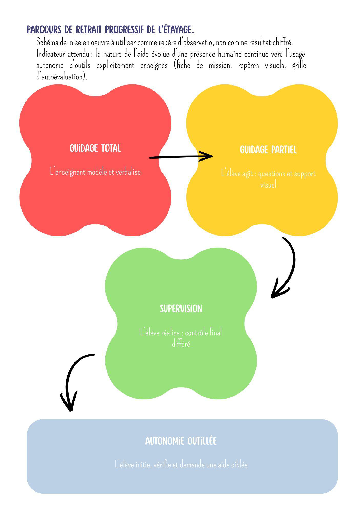
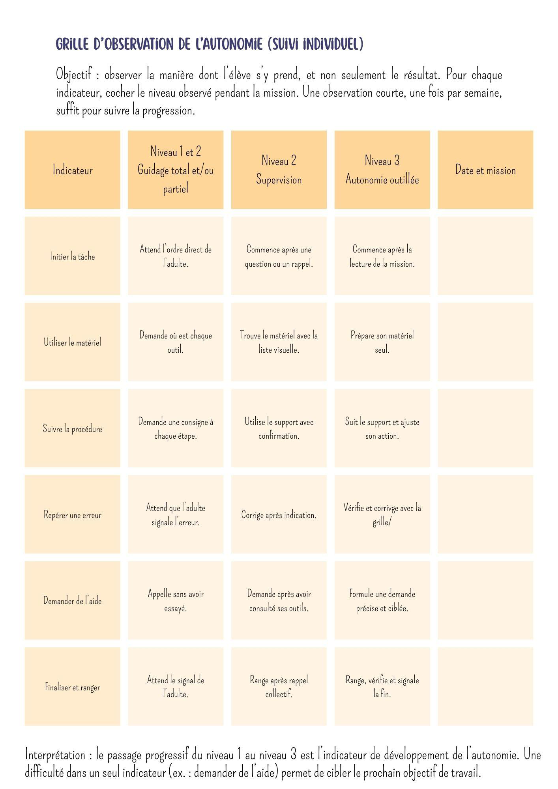
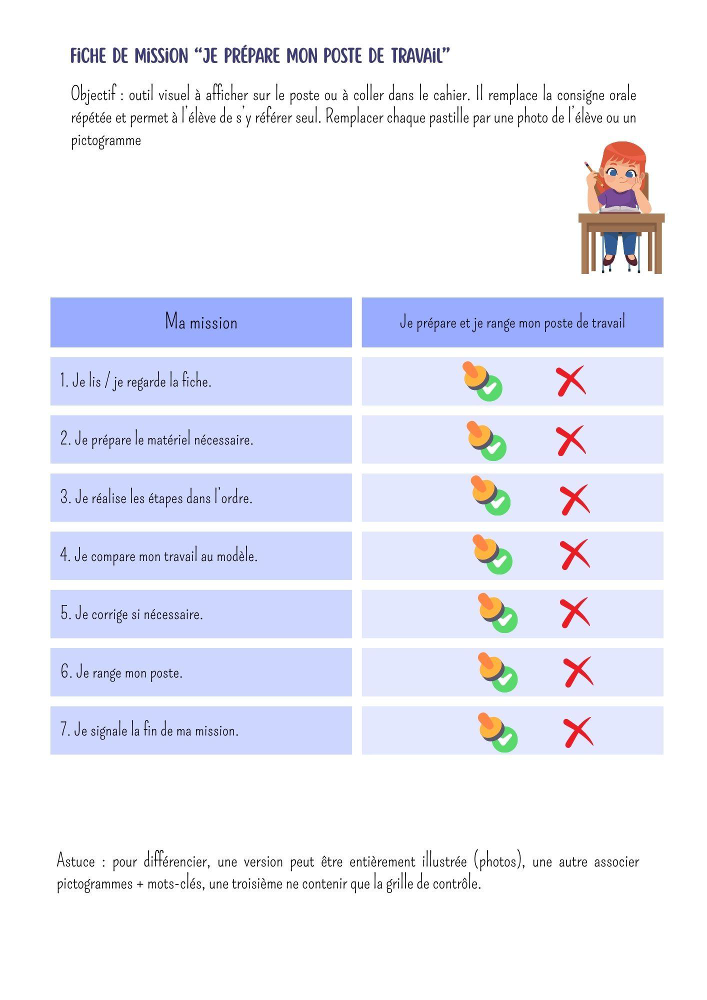
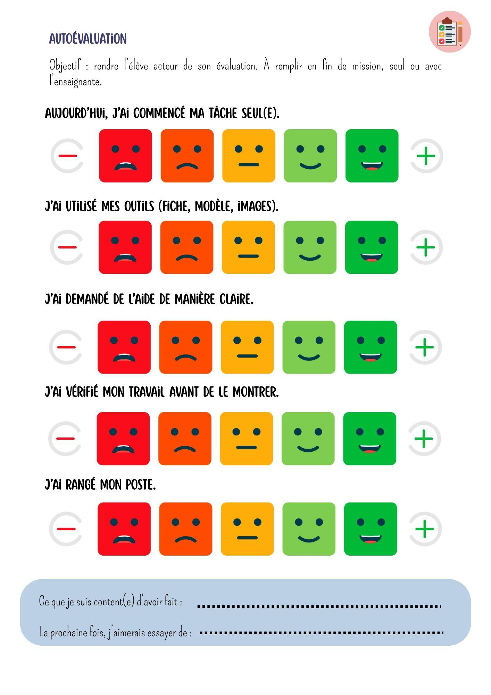
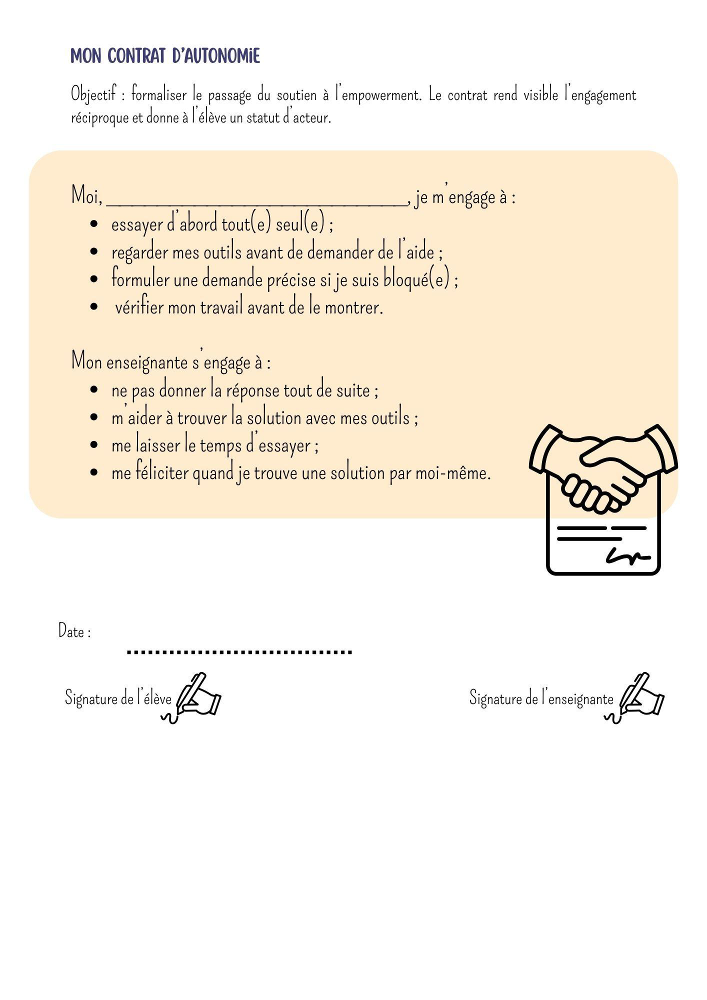
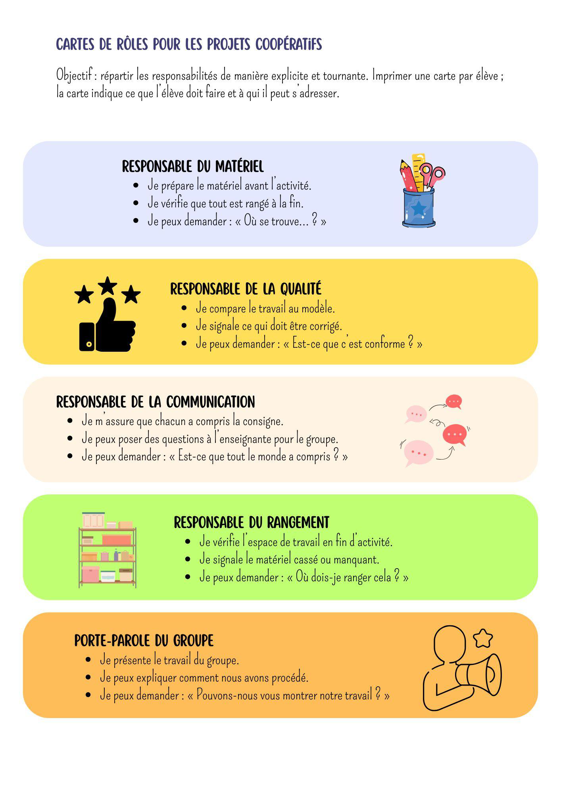
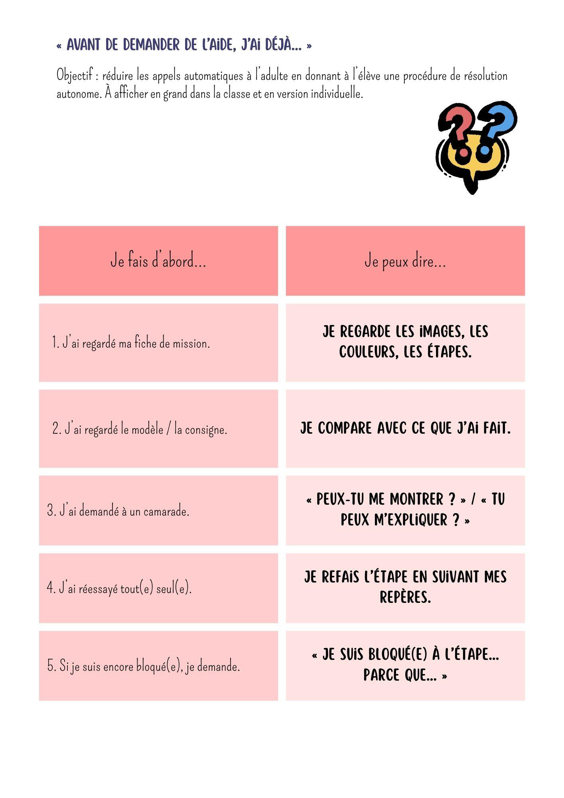
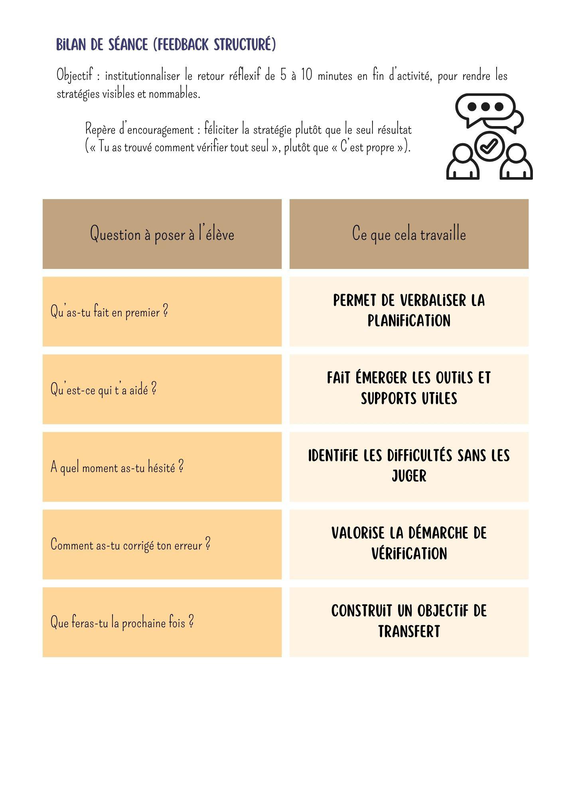
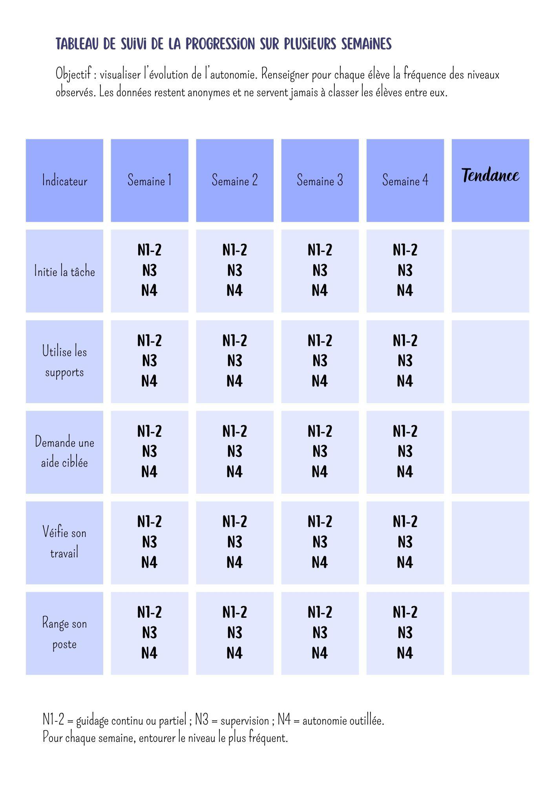

🎓 Mémoire d'Émilie — Sciences de l'Éducation¶
Bienvenue sur le wiki de ton mémoire ! Cet espace est conçu pour t'accompagner tout au long de la rédaction, en lien direct avec ton Google Drive partagé.
📁 Accès direct à tes documents¶
👉 Ouvrir le dossier Google Drive partagé
bavi/bureau-emilie
- 🔍 Voir tous tes documents (brouillons, versions du mémoire, PDF envoyés au réviseur, template)
- 📤 Déposer de nouveaux fichiers (un brouillon, une version corrigée, des notes)
- 📄 Les documents sont automatiquement synchronisés vers ce wiki
Les documents de travail (version par version) : - 📄 Mémoire — version PDF envoyée au réviseur (07/08) - 📁 Le dossier complet contient les versions précédentes et le template officiel
🤝 Gouvernance du mémoire : on produit ensemble¶
Le chat n'est pas le mémoire. Il sert à réfléchir, poser une question, décider d'une amélioration ou demander une relecture. Le travail utile est ensuite intégré dans les espaces de production : le wiki et le Google Doc.
Les trois repères de travail¶
| Espace | Rôle | Quand l'utiliser ? |
|---|---|---|
| Telegram avec Émile | Réflexion, demandes, questions et validation | Tu poses une question ou tu travailles une idée avec moi |
| Wiki Markdown | Source structurée et versionnée du contenu | Émile y conserve le texte de référence et l'historique utile |
| Google Doc V6 | Manuscrit modifiable d'Émilie | Tu relis, modifies directement un mot, ajoutes un passage ou prépares l'envoi suivant |
Notre règle de travail¶
- Tu me demandes une aide, une relecture, une amélioration ou une rédaction ciblée.
- Nous travaillons ensemble : je propose, explique et vérifie ; tu gardes la décision sur ton mémoire.
- Dès qu'un élément est validé, je l'intègre moi-même au wiki et/ou au Google Doc approprié.
- Tu n'as donc pas à reconstruire seule le mémoire par copier-coller depuis une conversation.
- Avant une nouvelle version destinée au directeur, Émile vérifie la cohérence du wiki, du Google Doc et du rendu PDF.
👉 Ouvrir le Google Doc de travail V6
👉 Consulter la référence visuelle du PDF transmis (23 pages)
👉 🎓 Préparer la défense orale devant le jury (évaluation, questions probables, réponses types)
📖 Comment ça marche¶
- Tu peux déposer un document ou une note dans le Drive partagé.
- Tu peux modifier directement le Google Doc V6 : Émile peut ensuite synchroniser et contrôler la version de référence.
- Tu peux simplement parler à Émile : si ton échange débouche sur un élément important, demande-moi : « Émile, intègre cela dans le mémoire ». Je produirai l'artefact au bon endroit.
🗂️ Structure du wiki¶
| Section | Contenu |
|---|---|
| 📋 Plan | Structure complète du mémoire + statut de chaque section |
| 📖 Introduction | Problématique ciblée et description |
| 🔍 Analyse réflexive | Le constat terrain et son analyse |
| 🎯 Hypothèse | L'hypothèse centrale et ses piliers |
| 🧠 Cadre théorique | Fondements scientifiques (institutionnel, psychopédagogie, leviers didactiques) |
| 💡 Propositions de solutions | Section annoncée dans la version transmise ; rédaction future avec Émile |
| ✅ Conclusion | Section annoncée ; rédaction future avec Émile |
| 📎 Annexes | À compléter lorsque les supports seront produits |
| 📚 Bibliographie | Références APA + sitographie |
| 📝 Notes | Idées, questions, historique des conversations |
| 👨🏫 Retours directeur | Commentaires et suggestions du directeur de mémoire |
🤖 Le Bot (Émile)¶
Le bot s'appelle @Bureau_ia_emilie_bot (recherche-le dans Telegram).
Il pourra : - Relire un chapitre complet et suggérer des améliorations - Vérifier la cohérence entre les parties - T'aider à formuler tes arguments - Suggérer des références complémentaires - Mettre à jour ce wiki et tes documents
🚦 État d'avancement du mémoire¶
| Section | Statut |
|---|---|
| Introduction (problématique + analyse) | ✅ Rédigé et validé |
| Hypothèse | ✅ Rédigé et validé |
| Fondements scientifiques | ✅ Rédigé et validé |
| Propositions de solutions concrètes (7 p.) | ⏳ À rédiger avec Émile |
| Conclusion (2 p.) | ⏳ À rédiger |
| Annexes | ⏳ À compléter |
🕐 Dernière mise en ligne : 28/08/2026 04:15
Propulsé par BAVI LEO — Bureau Émile
📋 Plan du mémoire — Émilie Dhr¶
Structure validée — conforme au document envoyé au réviseur (PDF 42 pages) et au template officiel.
Question de recherche¶
« Quelle pratique pédagogique contribue au développement des compétences d'autonomie, d'insertion sociale et d'insertion professionnelle chez les élèves de forme 2 de l'enseignement spécialisé ? »
Structure complète du document¶
| Section | Contenu | Statut |
|---|---|---|
| I. Table des matières | Pagination complète | ✅ À générer en fin de rédaction |
| II. Introduction | A. Problématique ciblée et description B. Analyse réflexive |
✅ Rédigé et validé |
| III. Hypothèse | Pédagogie active + différenciation systématique → autonomie durable | ✅ Rédigé et validé |
| IV. Fondements scientifiques | A. Cadre institutionnel et légal (types, formes, Forme 2) B. Psychopédagogie de l'autonomie (Deci & Ryan, Bandura, Seligman, transfert) C. Leviers didactiques (Piaget, Vygotsky, Dewey, Kolb, Flavell, Tomlinson, Bruner, neuropsychologie, empowerment) |
✅ Rédigé et validé |
| V. Propositions de solutions concrètes | Dispositifs pédagogiques opérationnels répondant à la question de recherche | ✅ Rédigé et validé |
| VI. Conclusion | A. Retour sur la question et l'hypothèse B. Analyse critique des pistes C. Répercussions sur la pratique |
✅ Rédigé et validé |
| VII. Annexes | 9 supports pédagogiques (schémas, grilles, fiches, contrats) | ✅ Complété |
| VIII. Bibliographie | Références APA 7e éd. (francophones) | ✅ Rédigé |
| IX. Sitographie | Sources web officielles | ✅ Rédigé |
Introduction¶
A. Problématique ciblée et description¶
L'enseignement spécialisé en Belgique a pour vocation première de répondre aux besoins éducatifs spécifiques d'élèves dont le parcours scolaire classique s'est avéré inadapté. Au sein de mon établissement, nous accueillons des adolescents inscrits en Forme 2 : l'enseignement d'adaptation sociale et professionnelle. Cette forme d'enseignement occupe une place charnière et stratégique dans le parcours de l'élève, car elle ne vise plus seulement l'acquisition de connaissances académiques, mais s'oriente prioritairement vers une finalité d'insertion. L'objectif didactique central est de permettre à l'apprenant d'accéder à un milieu de vie et/ou de travail protégé, en développant des compétences sociales et professionnelles minimales, mais indispensables à sa survie sociale.
L'environnement scolaire de la Forme 2 est conçu pour être un pont entre l'école et la vie adulte. Le programme y est hybride : il allie des enseignements généraux simplifiés et des ateliers de formation professionnelle (comme l'économie, l'hôtellerie ou les services aux personnes). Cependant, dans ma pratique d'enseignante, je constate que ce « pont » est parfois fragile. Le public accueilli présente des profils d'une grande diversité, marqués par des fragilités cognitives, émotionnelles et sociales. Si l'établissement offre un cadre sécurisant et bienveillant, ce cocon protecteur peut paradoxalement devenir un frein lorsque l'on envisage la transition vers le monde du travail.
Les faits observables sur le terrain sont révélateurs d'une tension majeure entre la réussite d'une tâche et l'acquisition d'une autonomie. En observant mes élèves lors des ateliers de compétences professionnelles, je remarque un phénomène récurrent : la « compétence assistée ». Certains élèves sont capables de réaliser une tâche technique avec une précision remarquable, à condition que l'enseignante soit physiquement présente à leurs côtés. Ils sont capables de suivre un processus si l'adulte dicte chaque étape, presque en temps réel. Mais dès que l'enseignante s'éloigne pour s'occuper d'un autre élève, ou que la consigne subit une légère variation, l'activité s'arrête net. L'élève se fige, manifeste une anxiété visible ou attend passivement une nouvelle instruction.
Ce manque d'autonomie cognitive et organisationnelle se manifeste également dans les gestes les plus simples du quotidien scolaire : l'organisation d'un agenda, le déplacement autonome entre deux locaux ou la gestion d'un petit conflit avec un pair. L'élève ne possède pas le savoir-faire technique, mais la capacité de reproduire un geste sous surveillance. L'autonomie semble alors être conditionnée par la présence rassurante de l'adulte, transformant l'apprentissage en une forme de dépendance sécurisante. Cette situation devient critique à mesure que les élèves approchent de la fin de leur scolarité. Le décalage entre la protection offerte par l'école et les exigences d'un milieu professionnel protégé devient un obstacle majeur. En entreprise, l'individu doit être capable de gérer un minimum de stress et de suivre une consigne sans assistance constante. Or, les outils pédagogiques traditionnels, souvent trop centrés sur la répétition mécanique de tâches, ne préparent pas suffisamment les élèves à cette transition. On observe une difficulté systémique à transférer les compétences apprises en classe vers des situations réelles d'insertion sans l'intervention d'un tiers. L'intérêt de traiter ce problème réside donc dans l'urgence de repenser l'ingénierie pédagogique. Il ne s'agit plus seulement d'apprendre à l'élève comment faire une tâche technique, mais de concevoir des situations d'apprentissage où il apprend comment s'organiser pour la réaliser seul. L'enjeu est de passer d'un enseignement « de soutien », où l'enseignante pallie les manques de l'élève, à un enseignement « d'autonomisation », où l'enseignante crée des conditions pour que l'élève mobilise ses propres ressources. C'est à partir de ce constat que naît ma question de recherche : « Quelle pratique pédagogique contribue au développement des compétences d'autonomie, d'insertion sociale et d'insertion professionnelle chez les élèves de forme 2 de l'enseignement spécialisé ? »
Analyse réflexive¶
B. Analyse réflexive¶
L'analyse des situations observées en Forme 2 révèle que les difficultés d'autonomie des élèves ne sont pas uniquement liées à des limitations cognitives, mais résultent d'une interaction complexe entre leur état émotionnel et la stratégie didactique mise en œuvre. En tant que future enseignante, je constate que le défi majeur réside dans la capacité à transformer un cadre scolaire sécurisant en un levier d'insertion professionnelle réelle.
D'un point de vue psychopédagogique, le frein principal identifié est le « transfert d'apprentissage ». Je remarque que l'élève peut maîtriser une compétence technique dans le cadre ritualisé de la classe, mais peine à la mobiliser dès que le contexte change. Pour l'enseignant, cela signifie que l'acquisition d'une compétence ne suffit pas ; c'est la capacité de l'élève à généraliser ce savoir-faire qui doit être l'objectif pédagogique. L'autonomie ne doit donc plus être vue comme un résultat spontané, mais comme une compétence à enseigner explicitement à travers des situations de transfert variées.
Par ailleurs, mon analyse montre que la dimension émotionnelle conditionne directement l'accès aux apprentissages. En Forme 2, si les comportements sont globalement stables, les émotions (frustration, anxiété) restent des obstacles cognitifs majeurs. Une émotion forte peut instantanément inhiber les fonctions exécutives nécessaires à la concentration. Pour l'enseignante, cela implique que la gestion du climat de classe n'est pas une tâche annexe, mais un préalable didactique. L'ajustement de la posture enseignante, entre fermeté du cadre et bienveillance, devient l'outil permettant de sécuriser l'élève pour qu'il puisse s'engager dans une tâche complexe.
Enfin, l'analyse met en lumière le rôle moteur du « sens » dans la motivation scolaire. J'ai observé que l'engagement des élèves augmente significativement lorsque la tâche est ancrée dans une réalité professionnelle concrète. Cela prouve que pour ce public, la motivation est intrinsèquement liée à l'utilité perçue de l'apprentissage. L'enjeu pour l'enseignante est donc de concevoir des activités où le savoir n'est pas transmis pour lui-même, mais comme un outil nécessaire à la résolution d'un problème réel. C'est en plaçant l'élève dans une posture d'acteur et de décideur que l'on favorise le passage de la dépendance à l'autonomie.
Hypothèse¶
III. Hypothèse¶
Au regard de l'analyse précédente, je postule que le développement de l'autonomie et des compétences d'insertion chez les élèves de Forme 2 ne peut être atteint par un enseignement purement directif ou répétitif. Pour briser le cycle de la dépendance, il est nécessaire de mettre en œuvre une approche pédagogique active et différenciée, centrée sur l'expérimentation en situations réelles.
Mon hypothèse est la suivante : la mise en place d'une pédagogie active basée sur la résolution de problèmes concrets, couplée à une différenciation pédagogique systématique (adaptation des supports, des étapes de consignes et des outils de guidage), permet de transformer l'apprentissage technique en une compétence d'autonomie durable.
Cette approche repose sur deux piliers didactiques. D'une part, la pédagogie active permet à l'élève de ne plus être un simple exécutant, mais de devenir l'architecte de sa propre tâche. En le confrontant à des simulations professionnelles où il doit faire des choix, l'enseignante stimule ses fonctions exécutives et sa capacité d'initiative. D'autre part, la différenciation pédagogique permet de lever les blocages individuels : là où un élève a besoin d'un support visuel pour s'organiser, un autre aura besoin d'un guidage verbal simplifié. En adaptant l'outil à l'élève et non l'élève à l'outil, l'enseignante réduit l'anxiété liée à l'échec et renforce le sentiment d'auto-efficacité de l'apprenant.
En conclusion, je soutiens que c'est en déplaçant le centre de gravité de l'enseignement, de l'enseignant qui « fait savoir » vers l'élève qui « apprend à faire seul », que l'on favorise une insertion sociale et professionnelle réussie. L'objectif final n'est plus la réussite d'un exercice scolaire, mais la capacité de l'élève à s'adapter avec confiance aux exigences d'un milieu de travail protégé.
Fondements scientifiques¶
IV. Fondements scientifiques¶
L'élaboration d'une stratégie pédagogique visant l'autonomie des élèves de Forme 2 nécessite une analyse rigoureuse du cadre institutionnel belge et des théories de l'apprentissage. Cette section s'articule autour de trois axes : le cadre légal de l'enseignement spécialisé, la psychopédagogie de l'autonomie et les leviers didactiques de la pédagogie active.
A. Le cadre institutionnel et légal de l'enseignement spécialisé en Belgique¶
L'enseignement spécialisé en Belgique ne se définit pas comme un système unique, mais comme un ensemble de réponses pédagogiques adaptées aux besoins éducatifs spécifiques (BES) d'élèves dont les difficultés d'apprentissage, qu'elles soient d'origine cognitive, physique, sensorielle ou psychique, ne peuvent être pleinement prises en charge dans le cadre de l'enseignement ordinaire. Sa mission fondamentale est de garantir l'accès au droit à l'éducation pour tous, tout en visant l'épanouissement personnel et l'intégration sociale et professionnelle de l'apprenant.
1. L'organisation par types d'enseignement¶
L'organisation de ce système repose sur une structure rigoureuse, articulée autour de « types », de « formes » et de « phases ». L'enseignement spécialisé est segmenté en huit types, chacun répondant à une nature spécifique de déficience ou de trouble. Cette catégorisation permet d'orienter l'élève vers un environnement où les ressources paramédicales et pédagogiques sont les plus adaptées à ses besoins.
| Type | Public concerné |
|---|---|
| Type 1 | Pour les élèves ayant un retard mental léger |
| Type 2 | Pour les élèves ayant un retard mental modéré ou sévère |
| Type 3 | Pour les élèves ayant des troubles du comportement |
| Type 4 | Pour les élèves ayant une/des déficience(s) physique(s) |
| Type 5 | Pour les élèves présentant une/des maladie(s) ou ceux en convalescents |
| Type 6 | Pour les élèves ayant une déficience visuelle |
| Type 7 | Pour les élèves ayant une déficience auditive |
| Type 8 | Pour les élèves présentant des troubles de l'apprentissage |
Il est important de noter que, bien que ces types définissent l'orientation initiale, la tendance actuelle de l'enseignement spécialisé évolue vers une approche plus transversale, où les besoins de l'élève priment sur l'étiquette diagnostique. L'enseignante ne travaille pas avec un « Type », mais avec un individu possédant un parcours singulier.
2. L'articulation des formes d'enseignement : le pivot de la Forme 2¶
L'enseignement secondaire spécialisé est organisé en quatre formes, qui définissent la finalité du parcours de l'élève et le degré d'autonomie visé. Cette organisation permet de calibrer les attentes pédagogiques en fonction du potentiel de l'apprenant et de son projet de vie.
- La Forme 1 (adaptation sociale) : vise une insertion en milieu de vie protégé.
- La Forme 3 (enseignement professionnel) : prépare à l'insertion socioprofessionnelle.
- La Forme 4 (enseignement général, technique, artistique ou professionnel) : correspond à un parcours proche de l'ordinaire, mais avec un encadrement adapté.
Au centre de ce dispositif, la Forme 2, ou enseignement d'adaptation sociale et professionnelle, occupe une position charnière. Sa finalité est double : elle vise à donner une formation générale et professionnelle suffisante pour rendre possible l'insertion en milieu de vie et/ou de travail protégé. Pour l'enseignante, la Forme 2 représente un défi didactique particulier. Il ne s'agit plus seulement de transmettre des savoirs, mais de développer des compétences de survie sociale et professionnelle. L'enjeu est de transformer des capacités résiduelles en compétences fonctionnelles.
3. Les objectifs de l'insertion en milieu protégé¶
L'insertion, telle que définie dans les orientations de la Forme 2, ne doit pas être confondue avec une simple employabilité. Elle s'entend comme la capacité de l'élève à s'intégrer dans un environnement social et professionnel où les exigences sont adaptées à ses capacités. Le milieu protégé (comme les entreprises sociales ou les ateliers protégés) offre un cadre où l'individu peut exercer une activité productive tout en bénéficiant d'un soutien constant.
Cependant, pour que cette insertion soit réussie et durable, l'élève doit avoir acquis un socle minimal d'autonomie. L'enseignement spécialisé en Belgique insiste sur le fait que l'insertion n'est pas la fin du processus, mais le début d'une nouvelle phase d'apprentissage. Dès lors, le rôle de l'enseignant en Forme 2 est de préparer l'apprenant à devenir un acteur de son propre parcours, en réduisant progressivement la dépendance vis-à-vis de l'adulte pour favoriser l'entrée dans la vie adulte.
B. La psychopédagogie de l'autonomie et de l'insertion¶
L'objectif de l'enseignement en Forme 2 est l'insertion. Or, l'insertion est intrinsèquement liée à la notion d'autonomie. Pour l'enseignante, comprendre l'autonomie ne peut se limiter à observer si l'élève « est capable de faire seul » ; il s'agit d'analyser les processus cognitifs et émotionnels qui permettent, ou empêchent, ce passage à l'action indépendante.
1. La distinction entre autonomie technique et autonomie cognitive¶
Une erreur courante dans l'accompagnement des élèves en enseignement spécialisé est de confondre la maîtrise d'un geste et l'autonomie réelle. Il convient de distinguer deux niveaux d'autonomie :
L'autonomie technique (ou procédurale) : C'est la capacité de l'élève à exécuter une suite de gestes appris. L'élève sait comment faire l'action (par exemple, plier un carton ou ranger un outil). Cependant, cette autonomie est souvent fragile car elle est liée à la répétition et à la routine.
L'autonomie cognitive (ou organisationnelle) : C'est la capacité de l'élève à planifier sa tâche, à s'auto-évaluer et à ajuster son comportement face à un imprévu.
C'est ici que se situe la rupture pour les élèves de Forme 2. L'analyse des situations de classe montre que beaucoup d'élèves possèdent une autonomie technique, mais manquent d'autonomie cognitive. Ils sont capables de réaliser l'action, mais ils sont incapables de décider de lancer l'action sans l'impulsion de l'adulte. Pour l'enseignante, l'enjeu n'est donc plus de renforcer le geste technique, mais de travailler sur les fonctions exécutives : la planification, l'initiation de l'action et la flexibilité mentale.
2. La théorie de l'auto-détermination et la motivation intrinsèque¶
Pour que l'élève s'engage dans un processus d'autonomisation, il doit être motivé. Selon la théorie de l'auto-détermination développée par Deci et Ryan (2002), l'être humain possède trois besoins psychologiques fondamentaux : le besoin de compétence, le besoin d'autonomie et le besoin de proximité sociale.
Chez les élèves de Forme 2, ces besoins sont souvent fragilisés. Le besoin de compétence est entravé par un historique d'échecs scolaires répétés, tandis que le besoin d'autonomie est paradoxalement inhibé par un environnement trop protecteur. Lorsque l'enseignante pallie systématiquement les difficultés de l'élève, elle crée une « impuissance apprise » (Seligman, 1975) : l'élève finit par croire qu'il ne peut réussir qu'avec l'aide d'un tiers.
Le passage à l'insertion professionnelle demande donc un basculement de la motivation. On passe d'une motivation extrinsèque (obéir à l'enseignant pour obtenir une récompense) à une motivation intrinsèque (réaliser la tâche pour le plaisir de la réussite ou pour l'utilité concrète du résultat). L'autonomie ne peut émerger que si l'élève ressent que l'action a un sens pour lui.
3. Le sentiment d'auto-efficacité (Self-Efficacy)¶
Le concept de sentiment d'auto-efficacité, développé par Albert Bandura (2003), est crucial pour comprendre le blocage des élèves face à l'imprévu. Le sentiment d'auto-efficacité est la croyance d'un individu en sa capacité à mobiliser les ressources nécessaires pour réussir une tâche donnée.
On observe en Forme 2 que même un élève capable techniquement peut refuser de tenter une action seule s'il a un faible sentiment d'auto-efficacité. La peur de l'erreur devient alors paralysante. L'élève ne se demande pas « Comment faire ? » mais « Suis-je capable de le faire seul ? ». Si la réponse interne est négative, il se figera et attendra l'adulte.
Pour l'enseignante, cela signifie que l'apprentissage technique doit être accompagné d'un travail sur la confiance. Le renforcement positif ne doit pas porter sur le résultat final (« C'est réussi »), mais sur le processus d'autonomie (« Tu as réussi à trouver la solution tout seul »). C'est en multipliant les « petites victoires » autonomes que l'on reconstruit le sentiment d'auto-efficacité, condition sine qua non pour l'insertion professionnelle.
4. Le transfert d'apprentissage et la généralisation¶
Le dernier obstacle à l'insertion est le problème du transfert. Le transfert est la capacité de mobiliser une compétence acquise dans un contexte A (la salle de classe) pour l'appliquer dans un contexte B (le stage en entreprise).
Pour les élèves de Forme 2, le transfert est souvent coûteux cognitivement. Ils perçoivent la classe et le stage comme deux mondes totalement distincts. Le savoir acquis en classe reste « prisonnier » de la classe. Ce phénomène s'explique par une difficulté à identifier les invariants d'une tâche. L'élève ne voit pas que « ranger son bureau à l'école » est la même compétence que « ranger son poste de travail en entreprise ».
L'enseignement doit donc s'orienter vers des situations « authentiques ». Plus l'apprentissage en classe ressemble à la réalité professionnelle (en termes de bruit, de contraintes, de matériel), plus le transfert sera facilité. L'autonomie ne s'acquiert pas dans l'abstraction, mais dans la confrontation répétée avec le réel.
C. Les leviers didactiques : pédagogie active et différenciation¶
L'objectif d'insertion sociale et professionnelle des élèves de Forme 2 impose une rupture paradigmatique profonde dans la conception de l'enseignement spécialisé. Dans ce contexte, l'enseignante ne peut plus se positionner comme une simple distributrice de savoirs techniques, mais doit devenir l'architecte de situations d'apprentissage. L'enjeu n'est plus la transmission d'une information, mais la construction d'une compétence. Cette transition nécessite de s'appuyer sur des fondements théoriques solides qui justifient le passage d'une pédagogie du soutien, où l'adulte pallie les manques de l'élève, à une pédagogie de l'autonomisation, où l'adulte structure l'environnement pour que l'élève puisse agir seul.
1. L'épistémologie de l'action et la construction du savoir-agir¶
Pour comprendre comment un élève de Forme 2 accède à l'autonomie, il est impératif d'analyser la manière dont il construit ses connaissances. Le courant constructiviste, initié par Jean Piaget, postule que l'apprentissage n'est pas une absorption passive de données, mais un processus actif d'assimilation et d'accommodation. L'élève ne reçoit pas le savoir ; il le construit en interagissant physiquement et cognitivement avec son environnement. Dans le contexte spécifique de la Forme 2, cela signifie que l'apprentissage d'un geste professionnel (par exemple, le tri de documents ou la préparation d'un poste de travail) ne peut être acquis par une simple observation ou une démonstration de l'enseignante. Il doit résulter d'une manipulation active où l'élève confronte ses représentations mentales, ses idées préconçues sur la manière de faire, à la réalité matérielle. C'est dans ce processus que naît le « conflit cognitif » : le moment précis où l'élève réalise que sa méthode actuelle ne produit pas le résultat attendu. Ce déséquilibre est le moteur indispensable de l'apprentissage, car il force l'élève à modifier sa structure mentale pour intégrer une nouvelle compétence.
Toutefois, le constructivisme individuel est insuffisant pour répondre aux exigences de l'insertion sociale et professionnelle. C'est ici qu'intervient le socio-constructivisme de Lev Vygotsky (1985), qui introduit la dimension sociale comme le moteur premier du développement cognitif. Selon Vygotsky, toute fonction psychique supérieure apparaît deux fois : d'abord au niveau social (interpsychique), puis au niveau individuel (intrapsychique). Pour l'élève de Forme 2, l'apprentissage de l'autonomie ne peut donc pas être un chemin solitaire. Il passe nécessairement par l'interaction médiatisée avec ses pairs et avec l'enseignante. L'autonomie n'est pas un état initial ou un trait de caractère, mais le résultat d'une socialisation réussie des compétences. L'enseignante ne doit donc pas seulement être un guide technique, mais un médiateur qui organise les interactions sociales pour favoriser l'émergence de compétences individuelles. En encourageant l'entraide entre élèves ou en organisant des feedbacks croisés, l'enseignante permet à l'élève d'extérioriser sa pensée, de la verbaliser et, finalement, de l'internaliser pour devenir autonome.
Cette approche est complétée par la philosophie pragmatiste de John Dewey (1967), pour qui l'éducation est un processus de reconstruction continue de l'expérience. Dewey soutient que l'apprentissage doit être ancré dans des situations authentiques, car c'est l'utilité concrète qui donne sens à l'effort cognitif. Pour l'enseignante en Forme 2, cela implique que chaque activité proposée en classe doit avoir un lien direct et tangible avec la réalité professionnelle. Si l'élève perçoit l'exercice comme une tâche scolaire déconnectée de sa future vie d'adulte, son engagement cognitif s'effondre. L'action n'est donc pas un simple moyen d'illustrer un cours, mais la condition même de l'apprentissage. En plaçant l'élève dans des situations de résolution de problèmes réels, l'enseignante transforme l'atelier en un laboratoire d'expérience. L'élève ne développe pas seulement un « savoir-faire » (la technique), mais surtout un « savoir-agir » (la capacité à mobiliser la technique dans un contexte imprévu).
L'intégration de ces trois courants, le constructivisme, le socio-constructivisme et le pragmatisme justifie pleinement le choix d'une pédagogie active. Si le savoir est une construction sociale et expérientielle, alors l'autonomie ne peut être enseignée par des consignes orales ou des modèles à copier, mais doit être pratiquée à travers des expériences vécues. L'enseignante devient alors l'architecte de ces expériences, veillant à ce que le degré de défi soit suffisant pour provoquer le déséquilibre nécessaire à l'apprentissage, tout en s'assurant que le cadre reste assez sécurisant pour éviter une anxiété paralysante.
2. L'ingénierie de l'apprentissage expérientiel et la dynamique de la métacognition¶
Si l'action est le point de départ de l'apprentissage, elle ne suffit pas à elle seule pour produire de l'autonomie. Une expérience sans réflexion reste une répétition mécanique. Pour que l'élève de Forme 2 passe d'une exécution passive à une maîtrise autonome, l'enseignante doit mettre en place une véritable ingénierie de l'apprentissage expérientiel. Le cadre théorique de référence ici est le cycle de David Kolb (1984), qui propose que l'apprentissage soit un processus en quatre étapes itératives, transformant l'expérience brute en connaissance structurée.
La première phase, l'expérience concrète, place l'élève face à une situation professionnelle réelle, souvent sans consignes exhaustives. Cette immersion est cruciale : elle crée un « besoin d'apprendre ». L'enseignante ne commence pas par expliquer, mais par proposer une action. En observant l'élève dans cette phase, l'enseignante identifie non seulement les compétences techniques manquantes, mais surtout les blocages organisationnels. L'élève se confronte à la réalité matérielle, et c'est dans cette confrontation que naît l'intérêt pour la solution.
C'est alors que s'engage la deuxième phase, l'observation réfléchie. C'est l'étape la plus critique pour le développement de l'autonomie. Au lieu de corriger immédiatement l'erreur, l'enseignante amène l'élève à analyser son propre geste. C'est ici que se déploie la métacognition, concept théorisé par John Flavell (1979) comme la capacité d'un individu à surveiller et à réguler ses propres processus cognitifs. Pour un élève de Forme 2, la métacognition est souvent une compétence fragile. Il sait « faire », mais il ne sait pas « comment il fait », ni « pourquoi il échoue ». En posant des questions ouvertes telles que : « Qu'as-tu remarqué lors de cette étape ? » ou « À quel moment penses-tu que le problème est apparu ? », l'enseignante force l'élève à sortir de l'automatisme pour entrer dans l'analyse. Elle transforme l'erreur, autrefois vécue comme un échec, en un objet d'étude.
La troisième phase, la conceptualisation abstraite, consiste à transformer cette réflexion en règle générale. L'enseignante aide l'élève à formuler un principe : « Pour que mon dossier soit bien classé, je dois toujours vérifier la première lettre avant de le poser ». On passe ainsi du cas particulier à la règle universelle. C'est l'étape où l'élève construit son propre guide interne. Sans cette phase, l'élève risque de réussir la tâche une fois, mais d'échouer dès que le contexte change légèrement.
Enfin, l'expérimentation active permet de tester cette nouvelle règle dans un contexte différent. C'est le moment de la validation du transfert d'apprentissage. Selon Perkins et Salomon (1988), le transfert est la capacité à mobiliser un savoir acquis dans une situation A pour résoudre un problème dans une situation B. Pour l'enseignante, c'est le test ultime de l'autonomie : l'élève est-il capable d'appliquer sa règle sans l'aide de l'adulte ?
Toutefois, l'implémentation de ce cycle comporte un risque didactique majeur : celui de la « pédagogie de la recette ». Si l'enseignante fournit la règle trop tôt, elle court-circuite les phases de réflexion et de conceptualisation. L'élève devient alors un exécutant docile, mais reste totalement dépendant de la consigne. L'objectif est donc de transformer l'atelier en un espace de recherche. L'Apprentissage Par Problème (APP) devient alors l'outil privilégié. En concevant des situations où l'élève doit chercher la solution par lui-même, l'enseignante ne lui enseigne pas une tâche, mais une stratégie de résolution de problèmes.
L'autonomie cognitive naît ainsi de ce mouvement constant entre l'action et la réflexion. L'enseignante ne se contente pas de former un travailleur capable d'exécuter des gestes, elle forme un individu capable de s'auto-évaluer et d'ajuster son action. Cette capacité d'auto-régulation est la compétence la plus précieuse pour l'insertion professionnelle, car elle permet à l'élève de s'adapter aux exigences d'un employeur sans nécessiter une supervision constante et exhaustive.
3. L'ingénierie de la différenciation pédagogique : une réponse didactique à l'hétérogénéité¶
La différenciation pédagogique est souvent réduite à une simplification des tâches pour les élèves en difficulté. Or, dans une perspective d'autonomisation en Forme 2, la différenciation doit être comprise comme une stratégie d'ingénierie visant à offrir à chaque élève un chemin d'accès unique vers un objectif commun. Le défi pour l'enseignante est de gérer une hétérogénéité cognitive et comportementale marquée sans jamais renoncer aux exigences de la compétence visée. Pour structurer cette approche, le cadre théorique de Carol Ann Tomlinson (2001) offre quatre leviers d'action sur lesquels l'enseignante peut agir pour optimiser l'apprentissage.
Le premier levier est la différenciation des contenus. Il s'agit ici d'ajuster la complexité ou la quantité des informations transmises, tout en maintenant l'objectif pédagogique. Par exemple, si l'objectif est la maîtrise d'un logiciel de traitement de texte pour l'insertion professionnelle, l'enseignante proposera des exercices de saisie simples pour un élève dont la coordination motrice est fragile, tandis qu'elle demandera à un élève plus avancé de réaliser une mise en page complexe avec des tableaux et des insertions d'images. Le contenu varie en intensité, mais la compétence « utiliser un traitement de texte » est la même pour tous. L'enseignante doit ainsi veiller à ce que le contenu soit situé dans la Zone Proximale de Développement (ZPD) de chaque élève : ni trop simple pour éviter l'ennui, ni trop complexe pour éviter le découragement.
Le second levier, la différenciation des processus, concerne les modalités d'apprentissage. L'enseignante reconnaît que chaque élève possède un profil cognitif différent. Elle peut alors mettre en place des « centres d'apprentissage » ou des parcours différenciés. Un élève pourra apprendre une procédure via un tutoriel vidéo (canal visuel et auditif), un autre via une check-list de pictogrammes (canal visuel et spatial), et un troisième via une démonstration directe et un guidage physique (canal kinesthésique). En diversifiant les processus, l'enseignante ne simplifie pas l'apprentissage, mais elle en multiplie les points d'entrée. Cette approche permet à l'élève de découvrir son propre mode de fonctionnement, une étape essentielle pour développer son autonomie : l'élève apprend à identifier l'outil ou le support dont il a besoin pour réussir.
Le troisième levier est la différenciation des productions. L'évaluation traditionnellement uniforme est souvent un frein pour les élèves de Forme 2. La différenciation des productions consiste à permettre à l'élève de prouver sa compétence par des modalités variées. Pour valider la compétence « organiser son espace de travail selon des normes professionnelles », un élève pourra prendre des photos de son poste avant et après l'action, un autre pourra réaliser une démonstration orale, et un troisième pourra remplir une grille d'auto-évaluation. L'enseignante déplace ainsi le curseur de l'évaluation : ce n'est plus la forme du rendu qui importe, mais la preuve tangible de la maîtrise de la compétence. Cette flexibilité renforce le sentiment d'auto-efficacité de l'élève, car il est évalué sur ses réussites et non sur ses lacunes formelles.
Enfin, la différenciation de l'environnement permet de transformer l'espace physique en un outil pédagogique. L'enseignante organise la classe en zones fonctionnelles : une « zone de silence » pour les tâches demandant une forte concentration, une « zone de collaboration » pour l'entraide et le travail de groupe, et une « zone de ressources » où sont stockés les supports d'aide. En apprenant à choisir la zone adaptée à sa tâche et à son état émotionnel, l'élève développe une compétence d'auto-régulation fondamentale. L'environnement devient alors un médiateur qui aide l'élève à gérer son attention et son impulsivité.
L'implémentation de cette différenciation impose à l'enseignante une posture de « chercheur » : elle doit observer, tester, ajuster et ré-évaluer en permanence. Le risque majeur est de tomber dans une différenciation « subie », où l'enseignante crée des groupes figés (les « forts » et les « faibles »), ce qui renforcerait les stigmates et nuirait à l'estime de soi. Au contraire, une différenciation réussie est dynamique : un élève peut être « expert » en tri administratif mais « débutant » en communication sociale. L'enseignante doit donc orchestrer des groupes flexibles, où les rôles s'inversent selon la tâche.
En somme, la différenciation pédagogique en Forme 2 n'est pas un acte de bienveillance, mais un acte didactique rigoureux. Elle permet de transformer l'hétérogénéité de la classe en une ressource. En adaptant les contenus, les processus, les productions et l'environnement, l'enseignante ne se contente pas de faciliter l'apprentissage ; elle apprend à l'élève à naviguer dans la diversité des moyens pour atteindre un objectif. C'est précisément cette capacité d'adaptation qui constitue le cœur de l'autonomie professionnelle : savoir identifier l'outil, le support ou la méthode nécessaire pour accomplir une mission donnée.
4. La théorie de l'étayage et la dynamique du retrait : vers une autonomie durable¶
Le passage de la dépendance à l'autonomie ne peut se faire par une rupture brutale, mais par un processus gradué de retrait du soutien. Pour orchestrer ce passage, l'enseignante mobilise le concept d'étayage (scaffolding), théorisé par Jerome Bruner (1983) et ses collaborateurs. L'étayage est défini comme l'ensemble des interactions entre un adulte et un enfant, dont le but est d'aider ce dernier à accomplir une tâche qu'il ne pourrait réaliser seul. Cependant, la spécificité de l'étayage réside dans son caractère temporaire : pour être efficace, le soutien doit être ajustable et, surtout, destiné à disparaître.
L'ingénierie de l'étayage en Forme 2 suit une progression rigoureuse en quatre phases. La première phase est celle du guidage total. Ici, l'enseignante réalise la tâche avec l'élève, en utilisant un modelage verbal et moteur. Elle verbalise ses propres pensées pour rendre visible le processus cognitif (« Je regarde d'abord le nom, puis je cherche la lettre A »). Ce soutien maximal est essentiel pour sécuriser l'élève et éviter la frustration qui pourrait mener au blocage. La deuxième phase est celle du guidage partiel. L'enseignante ne fournit plus la solution, mais stimule la réflexion par des questions ouvertes. Elle n'est plus celle qui fait, mais celle qui incite l'élève à mobiliser ses propres ressources.
La troisième phase de l'étayage est celle de la supervision. L'enseignante s'efface physiquement et n'intervient qu'en fin de cycle pour valider le résultat. C'est l'étape du contrôle qualité, où l'élève assume la responsabilité de l'exécution tout en sachant qu'un filet de sécurité existe encore. Enfin, la quatrième phase est celle du retrait total, où l'élève est seul face à la tâche. Le succès de ce processus repose sur le concept de fading (estompement). L'échec majeur en enseignement spécialisé est le maintien d'un étayage trop prolongé. Lorsque l'enseignante continue d'aider un élève qui a déjà acquis la compétence, elle crée une « impuissance apprise » (Seligman, 1975), où l'élève attend systématiquement le signal de l'adulte pour agir. L'enseignante doit donc diagnostiquer avec précision le moment où le soutien devient un frein et forcer l'élève à assumer la responsabilité de son action.
5. Neuropsychologie appliquée : fonctions exécutives et prothèses cognitives¶
Pour justifier techniquement ce retrait du soutien humain, l'enseignante s'appuie sur la neuropsychologie. L'autonomie cognitive dépend directement des fonctions exécutives : la mémoire de travail, l'inhibition et la flexibilité mentale (Miyake et al., 2000). Les élèves de Forme 2 présentent souvent des fragilités dans ces domaines, ce qui rend la planification des tâches complexe et épuisante. Pour pallier ces manques, l'enseignante conçoit des « prothèses cognitives » : des supports visuels qui déchargent la mémoire de travail de l'élève.
Ces outils, tels que les check-lists de procédures, les plannings imagés ou les codes couleurs spatiaux, ne sont pas des béquilles, mais des outils de transition. En transformant une consigne orale complexe en une suite d'étapes visuelles, l'enseignante déplace la dépendance de l'élève : il n'est plus dépendant de l'humain (l'enseignante), mais d'un objet (le support). Ce transfert est l'étape cruciale vers l'insertion professionnelle. Dans un milieu de travail protégé, l'élève ne pourra pas toujours avoir une enseignante à ses côtés, mais il pourra avoir une fiche de poste imagée. L'autonomie naît ainsi de la capacité de l'élève à choisir et à utiliser le support adapté à sa situation.
6. Synthèse : la posture de l'enseignante, du soutien à l'« empowerment »¶
L'ensemble de ces leviers didactiques converge vers un changement de posture professionnelle. Dans un contexte de Forme 2, il existe un risque constant de glisser vers une posture de « soignant » ou de « protecteur », centrée sur le bien-être immédiat de l'élève. Or, l'insertion professionnelle exige une posture de « formateur », centrée sur la compétence. L'enseignante doit passer d'une logique de support (aider l'élève à réussir la tâche) à une logique d'« empowerment » (donner à l'élève les moyens de réussir seul).
L'empowerment implique l'acceptation de l'erreur comme outil didactique. L'enseignante doit tolérer que l'élève échoue temporairement pour qu'il puisse apprendre. Elle déplace le renforcement : au lieu de valoriser le résultat (« C'est propre »), elle valorise le processus (« Tu as réussi à trouver la solution tout seul »). En orchestrant ces leviers — action, différenciation, étayage et supports cognitifs — l'enseignante ne se contente pas de transmettre des savoir-faire. Elle construit chez l'élève la croyance en sa propre capacité d'agir, ce que Bandura (2003) appelle le sentiment d'auto-efficacité. C'est cette conviction intime, nourrie par des réussites concrètes et autonomes, qui constitue le véritable moteur de l'insertion sociale et professionnelle.
V. Propositions de solutions concrètes¶
Développer l’autonomie, l’insertion sociale et l’insertion professionnelle des élèves de Forme 2 Les propositions qui suivent répondent à la question de recherche : « Quelle pratique pédagogique contribue au développement des compétences d’autonomie, d’insertion sociale et d’insertion professionnelle chez les élèves de Forme 2 de l’enseignement spécialisé ? » Elles opérationnalisent l’hypothèse selon laquelle une pédagogie active, fondée sur la résolution de problèmes concrets et associée à une différenciation systématique des supports, des consignes et de l’étayage, permet de transformer un apprentissage technique en compétence d’autonomie durable. Elles sont conçues comme un dispositif cohérent et progressif. Il ne s’agit donc pas d’ajouter des activités isolées, mais de modifier l’organisation des situations d’apprentissage : l’élève doit pouvoir comprendre le but de l’action, essayer, se tromper, recourir à un outil, verbaliser sa stratégie et vérifier lui-même son résultat. La posture attendue de la future enseignante est celle d’une conceptrice de situations didactiques et non celle d’une adulte qui réalise, rappelle ou corrige continuellement à la place de l’élève. Ces propositions sont également nourries par mes deux expériences de stage. Lors des observations réalisées dans des cours d’éducation plastique auprès d’élèves de Forme 2, j’ai relevé l’intérêt d’une tâche structurée en étapes, de la manipulation concrète de matériel et de l’adaptation du rythme de travail. J’ai aussi observé que les élèves demeurent fortement sensibles à l’approbation de l’adulte, que le travail est souvent individuel et que les critères de réussite ou le retour réflexif de fin d’activité ne sont pas toujours explicités. Ces observations ne constituent pas une généralité sur les élèves de Forme 2 ; elles orientent toutefois une réflexion professionnelle sur les conditions didactiques permettant de faire évoluer une réussite accompagnée vers une réussite davantage autonome. Installer des ateliers de simulation professionnelle fondés sur l’expérience et la résolution de problèmes La première action consiste à organiser régulièrement des ateliers de simulation professionnelle. L’objectif n’est pas de reproduire artificiellement une entreprise, mais de proposer, dans le cadre sécurisant de la classe, des missions qui possèdent une finalité concrète, des contraintes compréhensibles et un résultat visible. Selon Dewey (2011), l’apprentissage prend sens lorsqu’il s’enracine dans l’expérience ; une expérience devient véritablement formatrice lorsqu’elle est suivie d’un temps de réflexion, de formulation d’une règle puis de réinvestissement. Cette organisation permet de répondre directement au constat de « compétence assistée » : l’élève ne se contente plus de répéter une procédure dictée par l’adulte, il doit mobiliser une stratégie dans une tâche qui a un
Dans la pratique, une même classe peut fonctionner par missions hebdomadaires. En fonction des possibilités de l’établissement, elles peuvent prendre la forme d’un accueil simulé, du traitement d’un courrier interne, de la préparation d’un matériel pour une activité collective, de la mise en ordre d’un stock, de la réalisation d’une affiche utile à l’école ou de la préparation d’une commande fictive. Le choix de la mission doit rester lié aux apprentissages prévus dans la discipline. En éducation plastique, par exemple, une production peut être pensée comme une commande : concevoir des pictogrammes pour signaler les espaces de l’école, réaliser une affiche annonçant une activité, préparer une décoration dans le cadre d’un évènement ou produire des étiquettes pour organiser du matériel. L’activité artistique conserve ses objectifs propres – manipulation d’outils, motricité fine, choix plastiques, expression – tout en permettant de travailler l’organisation, la prise de décision, le soin, la coopération et le respect d’une échéance.
Déroulement didactique d’une mission¶
Chaque mission est construite en quatre moments inspirés du cycle expérientiel. Premièrement, l’enseignante présente un objectif concret et observable : « Nous devons préparer les étiquettes de rangement de l’atelier pour que chacun retrouve le matériel. » Elle précise le produit attendu, le temps disponible, les règles de sécurité et les ressources accessibles, sans fournir immédiatement toutes les étapes. Cette entrée par la mission donne du sens à l’activité et rend l’élève acteur d’un problème à résoudre. Elle évite que la consigne soit vécue comme un exercice scolaire dépourvu d’utilité. Deuxièmement, l’élève ou le petit groupe entreprend la tâche. Pendant ce temps, l’enseignante observe avec une grille courte : l’élève identifie-t-il le matériel nécessaire ? commence-t-il sans appel systématique à l’adulte ? utilise-t-il les repères mis à sa disposition ? demande-t-il une aide précise ? Ce temps n’est pas un abandon de l’élève. Il constitue une observation diagnostique qui permet à l’enseignante d’identifier si le frein porte sur la compréhension du but, la planification, le geste technique, la gestion des émotions ou la coopération. Troisièmement, un arrêt réflexif est institué. L’enseignante ne se limite pas à dire ce qui est juste ou faux ; elle invite les élèves à verbaliser leurs choix à l’aide de questions accessibles : « Qu’as-tu fait en premier ? », « Qu’est-ce qui t’a aidé ? », « Comment as-tu compris que l’étiquette devait aller ici ? », « Que pourrais-tu faire autrement la prochaine fois ? ». Dans mes stages, l’importance de l’encouragement a été clairement observable. Ce temps de retour permet de déplacer l’encouragement du seul résultat vers la stratégie : l’élève est reconnu pour avoir cherché, utilisé un support, demandé une information pertinente ou vérifié son travail. Cette démarche rejoint le développement du sentiment d’auto-efficacité décrit par Bandura (2003). Quatrièmement, la règle ou la procédure utile est formalisée avec les élèves puis testée dans une variation de la situation. Ainsi, après avoir préparé une première série d’étiquettes, les élèves peuvent organiser un autre espace ou recevoir une nouvelle consigne comportant une contrainte supplémentaire. Le transfert est alors travaillé explicitement : l’enseignante fait nommer ce qui reste identique malgré le changement de matériel ou de contexte. Elle ne présume pas que l’élève généralisera spontanément. Elle construit des ponts entre l’activité de classe, les responsabilités quotidiennes à l’école et les futures situations de stage ou de travail adapté.
Différencier sans renoncer à l’objectif commun¶
La différenciation intervient avant, pendant et après la mission. L’objectif commun peut être, par exemple, « organiser son poste et produire un travail conforme au modèle demandé ». Toutefois, l’accès à cet objectif est modulé. Un élève peut recevoir une fiche de mission imagée avec trois étapes, tandis qu’un autre planifie lui-même les étapes à partir d’une consigne plus ouverte. Un élève peut disposer d’un modèle visuel, d’un code couleur ou d’un matériel déjà préparé ; un autre peut être chargé de vérifier les ressources ou de répartir les rôles. Cette différenciation des contenus, des processus, des productions et de l’environnement rejoint le cadre proposé par Perrenoud (1997), tout en conservant une exigence commune : agir de manière de plus en plus autonome dans
L’évaluation porte à la fois sur le produit et sur le processus. Le résultat final est important car les élèves doivent comprendre les normes de qualité attendues dans un cadre social ou professionnel. Néanmoins, l’enseignante observe surtout la manière dont l’élève a atteint ce résultat : a-t-il initié la tâche ? a-t-il consulté son outil avant de solliciter l’adulte ? a-t-il persévéré après une erreur ? a-t- il participé à un échange avec un pair ? Cette distinction protège l’élève du risque d’être jugé uniquement sur ses difficultés techniques et rend visibles les progrès vers l’autonomie. Enseigner l’usage de supports d’autonomie et organiser le retrait progressif de l’aide La deuxième action vise à transformer la dépendance à l’adulte en capacité à utiliser un outil. Dans les observations de stage, les consignes étaient généralement découpées et les activités organisées en étapes ; cette structuration constitue une force. Pour aller plus loin, il est nécessaire que les repères ne restent pas uniquement dans la parole ou la présence de l’enseignante. Ils doivent devenir des supports accessibles à l’élève : fiche de mission, séquence photographique, repère de rangement, planning, minuteur visuel, modèle de produit fini ou grille de vérification. Ces supports ne sont pas conçus comme des « béquilles » permanentes, mais comme des médiateurs qui rendent l’élève capable de s’orienter dans une tâche. Cette proposition s’inscrit dans le principe d’étayage développé par Bruner (1983). L’aide n’est pertinente que si elle est temporaire, ajustée et progressivement retirée. L’enseignante commence donc par modéliser l’utilisation du support. Elle ne dit pas uniquement : « Regarde ta fiche » ; elle montre comment s’y référer, verbalise sa stratégie et explique à quel moment la consulter. Ensuite, elle réduit les interventions directes et encourage l’élève à se tourner vers le repère avant de demander une réponse. Enfin, lorsque l’outil est maîtrisé, l’élève est amené à le choisir lui-même, à l’adapter avec l’enseignante ou à vérifier si un support reste nécessaire.
Une progression d’étayage lisible pour l’élève¶
Le retrait de l’aide doit être planifié et visible. Dans un premier temps, l’enseignante travaille avec l’élève : elle montre le geste, décompose la procédure et verbalise ses prises d’information. Dans un deuxième temps, l’élève réalise tandis que l’enseignante pose des questions brèves ou désigne le support. Dans un troisième temps, l’enseignante se place à distance et n’intervient qu’après une tentative autonome. Dans un quatrième temps, l’élève réalise et effectue lui-même un contrôle de qualité. Le schéma placé en annexe 1 peut être utilisé pour expliquer cette progression aux élèves et à l’équipe éducative. Cette progressivité est particulièrement importante pour éviter deux écueils. Le premier est l’aide trop rapide : lorsqu’un adulte donne immédiatement la solution, il protège l’élève de l’inconfort de la recherche mais l’empêche aussi de mobiliser ses ressources. Le second est le retrait trop brutal : laisser un élève seul devant une tâche qu’il ne comprend pas peut renforcer la peur de l’échec. La posture enseignante consiste donc à régler la distance didactique : assez proche pour rendre la réussite possible, assez en retrait pour que l’action puisse être attribuée à l’élève. Cette logique répond à la zone proximale de développement de Vygotski (1997) : l’apprentissage se situe dans l’écart entre ce que l’élève réalise déjà seul et ce qu’il peut réussir avec une médiation adaptée.
Exemple de fiche de mission transférable¶
Une fiche de mission peut être élaborée avec des photos prises dans la classe ou avec des pictogrammes simples. Elle comprend systématiquement : le but de la tâche, le matériel nécessaire, les étapes numérotées, un repère de sécurité, une modalité d’aide et une étape de vérification. L’élève apprend ainsi une routine professionnelle : je lis ou j’observe la mission, je prépare, je réalise, je vérifie, je range, je signale la fin. La fiche n’est pas distribuée passivement. Son utilisation devient elle-même un apprentissage, au même titre que l’usage correct d’un outil ou le respect d’une procédure. Dans l’enseignement artistique observé pendant mes stages, une fiche de mission peut accompagner l’utilisation d’une technique telle que l’encre, le pastel ou la peinture : préparer l’espace, choisir le matériel, respecter les étapes, nettoyer et ranger. L’intérêt pédagogique ne consiste pas à rigidifier la créativité ; il consiste à dégager les ressources attentionnelles nécessaires à l’expression et au choix. Lorsque l’élève ne doit plus solliciter l’adulte pour chaque question organisationnelle, il peut davantage se concentrer sur l’objectif artistique, sur l’exploration des matériaux et sur la communication de son intention. L’outil est différencié selon les besoins fonctionnels observés. Une fiche peut être entièrement illustrée, une autre associer pictogrammes et mots-clés, une troisième présenter seulement une grille de contrôle. Certains élèves bénéficieront d’étapes déjà ordonnées ; d’autres seront invités à remettre les étapes dans l’ordre. Il est également possible de proposer une version numérique accessible sur tablette, à condition que l’outil numérique reste au service de l’objectif d’autonomie et non une distraction supplémentaire. Dans tous les cas, l’enseignante vérifie que l’élève comprend l’outil et qu’il ne le manipule pas de manière purement mécanique. Organiser des projets coopératifs pour enseigner explicitement l’insertion sociale La troisième action porte sur l’insertion sociale. Dans les activités observées en stage, le travail individuel permettait à chaque élève de progresser à son rythme et de recevoir une adaptation. Toutefois, l’insertion sociale et professionnelle suppose aussi de pouvoir collaborer, demander une information, écouter une consigne collective, respecter un rôle et réagir à un désaccord. Ces compétences ne peuvent être laissées à l’implicite. Elles doivent être enseignées dans des situations didactiques où les interactions sont organisées, préparées et évaluées avec la même rigueur que les gestes techniques. L’enseignante peut donc mettre en place des projets coopératifs de courte durée et à finalité réelle : préparer une exposition des productions de classe, organiser un coin d’accueil pour une activité d’école, créer une signalétique, réaliser un objet collectif ou aménager un espace de travail. Chaque projet est divisé en rôles explicites et tournants : responsable du matériel, responsable de la qualité, responsable de la communication, responsable du rangement, porte-parole du groupe. Le rôle ne constitue pas une simple répartition des tâches ; il définit une responsabilité observable. L’élève sait ce qu’il doit faire, avec qui il doit communiquer et à quel moment il doit demander une vérification. Cette modalité s’appuie sur la dimension sociale de l’apprentissage mise en évidence par Vygotski (1997). Une compétence peut d’abord être réalisée avec autrui avant d’être progressivement intériorisée. La coopération ne signifie cependant pas que les élèves sont laissés seuls en groupe. L’enseignante prépare les règles de communication, modélise des formulations utiles – « Peux-tu me montrer ? », « Je ne suis pas d’accord parce que… », « J’ai terminé ma partie, que puis-je faire maintenant ? » – puis observe les interactions. Elle intervient non pour résoudre immédiatement le conflit, mais pour amener les élèves à recourir aux procédures de communication enseignées.
Sécuriser la coopération et différencier les rôles¶
Le travail collectif peut générer de la frustration, une attente excessive de validation ou une répartition déséquilibrée des tâches. C’est pourquoi il est essentiel de commencer par des binômes, sur un temps court, avec un résultat concret. L’enseignante choisit une tâche interdépendante : chaque élève doit produire une partie indispensable à la réussite commune. Par exemple, dans un projet d’affichage, un élève prépare les fonds, un autre choisit et découpe les pictogrammes, un autre vérifie la lisibilité, un autre organise le rangement. Le résultat final rend visible la contribution de chacun, ce qui favorise le sentiment de compétence et l’appartenance au groupe. La différenciation porte ici sur la complexité du rôle et sur les moyens de communication. Un élève qui éprouve des difficultés de langage peut utiliser des cartes de demande d’aide ou un rôle comportant une procédure visuelle claire. Un élève plus autonome peut tenir le rôle de contrôleur de qualité, à condition de lui enseigner une posture non directive et respectueuse. Les rôles tournent afin d’éviter l’enfermement dans une étiquette. L’élève qui est habile manuellement ne doit pas être systématiquement celui qui réalise ; il doit aussi apprendre à expliquer, à planifier ou à écouter. Cette rotation prépare la flexibilité attendue dans les environnements sociaux et professionnels. Après chaque séance, un temps de bilan de cinq à dix minutes est prévu. L’enseignante s’appuie sur une grille simple : « J’ai réalisé mon rôle », « J’ai demandé de l’aide de manière adaptée », « J’ai écouté une consigne ou un pair », « J’ai participé au rangement ». Les élèves peuvent s’autoévaluer avec des pictogrammes ou une échelle de trois niveaux. L’objectif n’est pas de sanctionner un comportement mais de rendre les compétences sociales visibles, nommables et perfectibles. Cette pratique répond également à une lacune repérée dans les observations de stage : l’absence ou la faible visibilité d’un feedback de fin d’activité. Le feedback devient ici une étape didactique indispensable au transfert. Mettre en place une évaluation formative de l’autonomie et un portfolio de compétences transférables La quatrième action vise à rendre les progrès lisibles pour l’élève, l’enseignante et, lorsque cela est pertinent, pour l’équipe et la famille. Si l’on veut développer l’autonomie, l’évaluation ne peut se limiter à constater si la production est réussie. Elle doit documenter la manière dont l’élève s’oriente dans la tâche, utilise ses outils, gère l’erreur, coopère et transfère une procédure dans un autre contexte. Une évaluation formative régulière permet à l’enseignante d’ajuster l’étayage et à l’élève de percevoir concrètement ses progrès. La grille proposée en annexe 2 est construite autour de quatre indicateurs : l’initiation de la tâche, l’exécution avec recours aux supports, l’auto-correction et la finalisation/rangement. Pour chacun, l’enseignante repère le niveau de soutien requis : guidage humain continu, rappel ponctuel ou recours autonome au support. Cette évaluation est brève, menée au cours de l’activité et discutée avec l’élève. Elle ne constitue pas un diagnostic de la personne ; elle décrit une situation précise et évolutive. Elle permet notamment de décider si l’enseignante doit maintenir un support, le simplifier, le rendre moins visible ou proposer une variation de la tâche. Les traces peuvent être rassemblées dans un portfolio de compétences. Celui-ci contient des photos de réalisations, des fiches de mission complétées, des autoévaluations, des observations de l’enseignante et, éventuellement, une courte verbalisation de l’élève : « Pour réussir, j’ai utilisé… », « La prochaine fois, je dois… ». Le portfolio ne sert pas à accumuler des productions ; il devient un outil de métacognition et de préparation à l’insertion. L’élève apprend à parler de ses compétences, de ses besoins d’aide et de ses stratégies. Dans une perspective de stage ou de travail adapté, savoir dire « J’utilise une fiche pour ne pas oublier les étapes » constitue déjà une compétence professionnelle.
Programmer le transfert et évaluer dans plusieurs contextes¶
Pour répondre pleinement à la question de recherche, l’évaluation doit inclure le transfert. Une compétence observée uniquement dans le local où elle a été enseignée reste fragile. L’enseignante programme donc des variations : réaliser la même mission avec un autre matériel, dans un autre local, avec un autre partenaire ou dans un délai différent. Elle annonce explicitement le lien : « Aujourd’hui, nous allons utiliser la même stratégie d’organisation que lors de l’atelier de peinture, mais pour préparer la table d’exposition. » Cette verbalisation aide les élèves à identifier les invariants de l’action et à comprendre que les compétences dépassent une activité particulière. Le graphique conceptuel de l’annexe 3 ne présente pas de résultats attribués à un élève réel ; il illustre la trajectoire que l’enseignante cherche à observer au fil des séances : une diminution progressive des sollicitations humaines et une utilisation plus autonome des supports. Pour chaque élève, les données réelles doivent être recueillies avec prudence, dans le respect de l’anonymat et sans transformer l’outil en classement entre élèves. La progression n’est ni linéaire ni identique pour tous. Un retour temporaire à un niveau de soutien plus important peut être nécessaire lors d’une tâche nouvelle, d’une période de fatigue ou d’un changement de contexte. Conditions de mise en œuvre et cohérence avec l’hypothèse Ces quatre actions forment un dispositif unique. Les ateliers de simulation donnent une finalité authentique aux apprentissages ; les supports d’autonomie permettent à l’élève de s’orienter sans dépendre exclusivement de l’adulte ; les projets coopératifs enseignent les compétences sociales nécessaires à l’insertion ; l’évaluation formative rend les progrès observables et favorise le transfert. La pédagogie active n’est donc pas comprise comme le fait de « faire beaucoup d’activités ». Elle désigne une organisation dans laquelle l’élève prend des décisions, agit, explicite sa stratégie, reçoit un retour et réinvestit ce qu’il a appris. La différenciation, quant à elle, ne réduit pas les exigences. Elle adapte le chemin, le support et le niveau d’étayage afin que chaque élève puisse accéder au même horizon : développer une autonomie fonctionnelle dans des situations sociales et professionnelles. Cette perspective est cohérente avec mon hypothèse. En structurant des situations concrètes, en enseignant explicitement l’usage de supports et en retirant progressivement l’aide, l’enseignante ne fait pas à la place de l’élève. Elle rend possible une expérience de réussite attribuable à l’élève lui-même. C’est cette évolution, de la réussite assistée vers la réussite outillée et transférable, qui peut contribuer à une insertion sociale et professionnelle plus durable. La mise en œuvre exigera une concertation avec les autres professionnels de l’établissement et un dialogue avec l’élève. L’enseignante conservera une posture réflexive : observer les effets du dispositif, ajuster les supports, distinguer ce qui relève d’un besoin temporaire de ce qui constitue une compétence installée et accepter que l’autonomie se développe par paliers. Ma responsabilité de future enseignante est ainsi de concevoir un cadre suffisamment structuré pour sécuriser les apprentissages, mais suffisamment ouvert pour que l’élève puisse exercer son pouvoir d’agir.
VI. Conclusion et réflexion critique¶
A. Retour sur la question de recherche et l’hypothèse¶
Ce travail est parti d’une question centrée sur la pratique pédagogique susceptible de contribuer au développement de l’autonomie, de l’insertion sociale et de l’insertion professionnelle chez les élèves de Forme 2 de l’enseignement spécialisé. L’analyse des observations de terrain a mis en évidence un décalage entre la réussite d’une tâche dans un cadre fortement accompagné et la capacité à initier, organiser, vérifier et transférer cette même tâche lorsque l’adulte se retire. La difficulté ne concerne donc pas uniquement l’acquisition d’un geste ou d’une procédure ; elle concerne également l’appropriation d’une stratégie permettant à l’élève d’agir dans un contexte nouveau, avec les outils adéquats et dans le respect d’un cadre collectif. L’hypothèse formulée postulait qu’une pédagogie active, associée à une différenciation des supports, des consignes et de l’étayage, peut transformer un apprentissage technique en compétence d’autonomie durable. Les pistes proposées – ateliers de simulation, supports d’autonomie, projets coopératifs et évaluation formative – sont cohérentes avec cette hypothèse. Elles visent toutes à déplacer progressivement l’aide de la présence constante de l’adulte vers des stratégies et des outils que l’élève peut mobiliser lui-même. Cependant, il serait prématuré d’affirmer que l’hypothèse est définitivement confirmée. Les propositions présentées constituent un dispositif pédagogique argumenté, mais elles n’ont pas fait l’objet, dans le cadre de ce travail, d’une expérimentation longue assortie de données comparatives. La conclusion la plus juste est donc la suivante : la pédagogie active et différenciée constitue une réponse didactique pertinente à la problématique repérée ; son efficacité réelle devra être appréciée au cours de sa mise en œuvre, à partir d’observations régulières et d’indicateurs individualisés. Une telle prudence est essentielle, car l’autonomie ne se réduit ni à une performance ponctuelle ni à une compétence qui se développerait de la même manière chez tous les élèves. La réponse apportée à la question de recherche peut dès lors être formulée ainsi : une pratique pédagogique contribuant au développement de l’autonomie et de l’insertion en Forme 2 est une pratique qui place l’élève dans des situations concrètes et signifiantes, qui lui enseigne explicitement des procédures et des stratégies, qui adapte les médiations à ses besoins fonctionnels, puis qui organise un retrait progressif de l’aide humaine. Cette pratique ne vise pas à faire réussir l’élève à tout prix ; elle vise à lui permettre de comprendre comment réussir, de mobiliser un support, de solliciter une aide précise lorsque celle-ci est nécessaire et de transférer progressivement ses acquis. La posture de l’enseignante est donc celle d’une conceptrice de situations d’apprentissage, attentive à la fois aux exigences de la tâche et aux conditions qui permettent à l’élève de s’y engager.
B. Analyse critique des pistes de solutions¶
La première limite concerne la faisabilité du dispositif. Les ateliers de simulation, la préparation de supports différenciés, l’observation formative et les temps de bilan demandent une organisation importante. Dans une classe hétérogène, l’enseignante doit maintenir le cadre collectif tout en ajustant son étayage. Il est donc préférable de commencer de manière réaliste : une mission courte, un support clair, un indicateur d’autonomie précis et un bilan bref. Un dispositif trop complexe risquerait de détourner l’attention de l’objectif essentiel : permettre à l’élève d’agir avec une marge d’initiative croissante. Une deuxième limite porte sur le risque de confondre autonomie et absence d’aide. Pour certains élèves, le recours à une fiche, à un repère visuel ou à une personne ressource restera une condition légitime de participation. Le but n’est pas de supprimer tout soutien, mais de distinguer l’aide qui rend l’action possible de celle qui maintient une dépendance inutile. L’autonomie visée est donc une autonomie outillée et contextualisée : l’élève apprend à reconnaître ce qu’il sait faire, ce pour quoi il a besoin d’un support et la manière adaptée de demander une aide. La troisième limite concerne le transfert. Une situation de classe, même très concrète, ne reproduit jamais totalement les contraintes d’un stage, d’une entreprise de travail adapté ou d’un milieu de vie. Les relations, le bruit, le rythme, la présence de nouveaux adultes et les imprévus modifient la mobilisation des compétences. Les simulations proposées doivent donc être pensées comme des espaces de préparation et non comme des substituts au réel. Pour renforcer leur portée, elles devraient être articulées à des sorties, à des rencontres avec des professionnels, à des stages, ainsi qu’à des échanges avec les familles et les partenaires qui accompagnent l’élève dans son projet d’insertion. L’enseignante gagnera aussi à faire varier les lieux, les matériels et les partenaires de travail afin d’enseigner explicitement ce qui demeure identique d’une situation à l’autre. Enfin, la mise en œuvre de ces pistes requiert une concertation avec l’équipe pluridisciplinaire. Une cohérence minimale est nécessaire concernant les repères de communication, les outils de demande d’aide et les attentes liées au rangement ou à l’autoévaluation. Cette concertation renforce la continuité pédagogique et rend les apprentissages plus transférables. La famille peut également devenir partenaire, non pour reproduire l’école à domicile, mais pour partager les outils qui aident réellement l’élève à se repérer dans son quotidien.
C.¶
Répercussions sur ma future pratique enseignante¶
Cette démarche a fait évoluer ma représentation du rôle de l’enseignante en Forme 2. J’ai compris que l’encouragement et le cadre sécurisant, indispensables aux apprentissages, ne suffisent pas à eux seuls. Ma responsabilité consiste à transformer ces conditions de sécurité en occasions de prise d’initiative. Je devrai donc anticiper les obstacles possibles, définir des critères de réussite accessibles, choisir des supports adaptés, accepter l’erreur comme une source d’information et planifier le retrait de mon aide. Cette posture demande de l’observation, de la patience et une réflexion continue sur mes propres interventions : est-ce que je soutiens l’apprentissage, ou est-ce que je réponds trop rapidement à la place de l’élève ? Les prolongements possibles de ce travail seraient de mettre le dispositif en œuvre sur une période suffisamment longue, de recueillir les autoévaluations des élèves et de comparer leurs modes d’action dans plusieurs contextes. Il serait également pertinent d’évaluer la perception des élèves : se sentent-ils davantage capables d’initier une tâche ? identifient-ils mieux les outils qui leur sont utiles ? osent-ils demander une aide ciblée ? Ces questions permettraient de donner une place réelle à leur parole dans l’évaluation du dispositif. En conclusion, l’enjeu professionnel qui se dégage de ce travail est de construire, avec les élèves, des conditions d’apprentissage qui les rendent progressivement auteurs de leurs actions et acteurs de leur parcours social et professionnel.
VII. Annexes¶
Source : PDF envoyé au réviseur — version avec corrections (42 pages, 07-08/08/2026). Les annexes sont des supports pédagogiques créés par Émilie (schémas, grilles, fiches).
A. Annexe 1 – Schéma de retrait progressif de l'étayage¶

B. Annexe 2 – Grille d'observation de l'autonomie (suivi individuel)¶

C. Annexe 3 – Fiche de mission « Je prépare mon poste de travail »¶

D. Annexe 4 – Autoévaluation¶

E. Annexe 5 – Contrat d'autonomie (élève / enseignante)¶

F. Annexe 6 – Cartes de rôles pour les projets coopératifs¶

G. Annexe 7 – Fiche « Avant de demander de l'aide, j'ai déjà… »¶

H. Annexe 8 – Bilan de séance (feedback structuré)¶

I. Annexe 9 – Tableau de suivi de la progression sur plusieurs semaines¶

Bibliographie¶
-
Astolfi, J.-P. (1997). L’erreur, un outil pour enseigner. ESF éditeur.
-
Bandura, A. (2003). Auto-efficacité : Le sentiment d’efficacité personnelle. De Boeck Supérieur.
-
Bruner, J. S. (1983). Le développement de l’enfant : Savoir faire, savoir dire. Presses Universitaires de France.
-
Dewey, J. (2011). Expérience et éducation. Armand Colin. (Œuvre originale publiée en 1938)
-
Mazeau, M., & Pouhet, A. (2014). Neuropsychologie et troubles des apprentissages chez l’enfant : Du développement typique aux dys. Elsevier Masson.
-
Meirieu, P. (1987). Apprendre… oui, mais comment. ESF éditeur.
-
Perrenoud, P. (1997). Pédagogie différenciée : Des intentions à l’action. ESF éditeur.
-
Piaget, J. (1975). L’équilibration des structures cognitives : Problème central du développement. Presses Universitaires de France.
-
Tardif, J. (1999). Le transfert des apprentissages. Les Éditions Logiques.
-
Vygotski, L. S. (1997). Pensée et langage (F. Sève, Trad.). La Dispute. (Œuvre originale publiée en 1934)
Sitographie¶
-
Agence pour une Vie de Qualité [AVIQ]. (s.d.). Accueil : Handicap, scolarité, formation et emploi. https://www.aviq.be
-
Agence pour une Vie de Qualité [AVIQ]. (s.d.). Transition-insertion. https://www.aviq.be/fr/scolarite-et-formation/formation/transition-insertion
-
Agence pour une Vie de Qualité [AVIQ]. (s.d.). Transition École-Vie active. https://www.aviq.be/fr/scolarite-et-formation/scolarite/transition-ecole-vie-active
-
Conseil de la Communauté française. (2004). Décret du 3 mars 2004 organisant l’enseignement spécialisé. Gallilex. https://gallilex.cfwb.be/sites/default/files/imports/27868_000.pdf
-
Fédération Wallonie-Bruxelles. (s.d.). Organisation de l’enseignement spécialisé : types, formes et degrés. Enseignement.be. https://www.enseignement.be/parcours- dapprentissage/enseignement-specialise/organisation
-
Fédération Wallonie-Bruxelles. (s.d.). Portail de l’enseignement en Fédération Wallonie- Bruxelles. Enseignement.be. https://www.enseignement.be
-
Institut national supérieur de formation et de recherche pour l’éducation inclusive [INSEI]. (s.d.). Accueil. https://www.insei.fr
-
Organisation des Nations Unies pour l’éducation, la science et la culture [UNESCO]. (2017). Un guide pour assurer l’inclusion et l’équité dans l’éducation. https://unesdoc.unesco.org/ark:/48223/pf0000248254_fre
-
Organisation des Nations Unies pour l’éducation, la science et la culture [UNESCO]. (s.d.). L’inclusion dans l’éducation. https://www.unesco.org/fr/education/inclusion
-
Unia. (s.d.). Ensemble pour l’égalité : ressources et accompagnement en matière d’inclusion. https://www.unia.be/fr/
-
Wallonie-Bruxelles Enseignement [WBE]. (s.d.). Accueil. https://www.wbe.be
📝 Notes
Historique des Échanges - Mémoire d'Émilie (TFE)¶
Session extraite : 20260807_095723_eeb66421 Titre : Mise en page et trame TFE
1. Contexte et Point de Départ¶
Émilie a soumis un document initial intitulé "Epreuve intégrée.docx". - Profil initial : Éducatrice spécialisée en école secondaire (types 6 et 7 - déficiences visuelles et auditives). - Constat : Arrivée d'élèves avec Troubles du Spectre de l'Autisme (TSA) et manque de préparation pédagogique de l'établissement. - Question de recherche initiale : « Quelles pratiques pédagogiques permettent de favoriser les apprentissages d’un adolescent présentant un Trouble du Spectre de l’Autisme au sein d’une école spécialisée ? » - Hypothèse initiale : Utilisation de la méthode TEACCH. - Étude de cas : Louis, élève en 3ème qualification professionnelle (3QP), section "travaux de bureau".
2. Pivot Stratégique (Le tournant majeur)¶
À la demande d'Émilie, le travail a pivoté pour s'éloigner du diagnostic médical (TSA) pour se concentrer sur les objectifs de l'enseignement spécialisé. - Nouvelle Question de Recherche : « Quelle pratique pédagogique contribue au développement des compétences d’autonomie, d’insertion sociale et d’insertion professionnelle chez les élèves de forme 2 de l’enseignement spécialisé ? » - Nouvelle Hypothèse : Mise en place d'une pédagogie active basée sur des situations réelles, couplée à une différenciation pédagogique adaptée aux besoins cognitifs et sensoriels. - Objectif : Passer d'une logique de "pathologie" à une logique de "compétences et insertion".
3. Structure et Contenu Validés¶
Le travail a été structuré selon les exigences du CAP 2025-2026 : - Partie 1 (Problématique) : Focus sur le paradoxe du "cocon protecteur" vs besoin d'autonomie. - Partie 2 (Analyse réflexive) : Analyse sous trois angles : Cognitif (transfert d'apprentissage), Émotionnel (sentiment d'auto-efficacité), et Systémique (protection vs risque). - Partie 3 (Hypothèse) : Affirmation de la pédagogie active et de la différenciation. - Partie 4 (Fondements scientifiques) : Synthèse théorique de 12 pages s'appuyant sur : - Socio-constructivisme (Piaget, Vygotsky). - Apprentissage expérientiel (Dewey, Kolb). - Étayage et zone proximale de développement (Bruner). - Différenciation pédagogique (Tomlinson).
4. Concepts Clés Introduits¶
- Empowerment (Autonomisation) : Transition d'une posture de "Soutien" (faire à la place de/dépendance) vers une posture d' "Empowerment" (donner les outils pour réussir seul/autonomie).
- Insertion Professionnelle : L'objectif final est de transformer l'élève "assisté" en un adulte "acteur".
5. Documents de Référence Intégrés¶
- Guide de rédaction 25-26.
- Grille d'évaluation officielle (AA n°0 à AA n°7).
- Informations générales du CAP.
6. État d'Avancement¶
- Problématique, Analyse, Hypothèse et Fondements Scientifiques : ✅ Rédigés et validés.
- Prochaine étape : Partie 5 (Solutions concrètes - 7 pages).
🎓 Préparation à la défense orale — Émilie Dhr¶
Objectif : préparer Émilie à la défense de son épreuve intégrée devant le jury. Ce document reprend l'évaluation complète (rapport du jury) + les questions probables et les réponses types. Source : analyse du document final (42 pages) envoyé au réviseur.
Partie 1 — Évaluation du mémoire (rapport du jury)¶
Appréciation générale¶
Très bon travail de fin d'études, avec une vraie maturité professionnelle. Le document est solide, cohérent, ancré dans le terrain, et démontre une posture d'enseignante-conceptrice plutôt que d'accompagnante-care.
Note indicative : 16-17/20 (sur la base du document écrit).
Les forces (ce que le jury valorise)¶
- Une question de recherche pertinente et professionnelle
- Ancré dans la réalité de terrain (Forme 2, insertion en milieu protégé), pas une question « de bibliothèque ».
-
Le pivot stratégique (du TSA vers l'autonomie/insertion) est bien justifié.
-
Une hypothèse opérationnelle
- « Pédagogie active + différenciation systématique → autonomie durable » : testable, claire, répond directement à la question.
-
L'hypothèse structure toute la suite du document.
-
Un cadre théorique dense et mobilisé (le point le plus fort)
- Axe institutionnel (types, formes, Forme 2) : nécessaire et bien maîtrisé.
- Axe psychopédagogique : Deci & Ryan, Bandura (auto-efficacité), Seligman, transfert — les bons auteurs.
- Axe didactique : Piaget, Vygotsky, Dewey, Kolb, Flavell, Bruner, Tomlinson, neuropsychologie, empowerment.
-
Références réellement utilisées, pas plaquées.
-
Des propositions concrètes et réalistes
- Mission didactique, étayage progressif, fiche transférable, coopération, transfert : opérationnel.
- Nourries des stages (éducation plastique, observation de la « compétence assistée »).
-
Les 9 annexes (schémas, grilles, fiches, contrat d'autonomie) : des outils réutilisables.
-
Une conclusion critique honnête — signe de maturité
- Trois limites reconnues : faisabilité, confusion autonomie/absence d'aide, limites du transfert.
-
Le jury récompense cette lucidité.
-
Forme et conformité
- Structure I → IX complète, pagination, en-tête, couverture : format d'épreuve respecté.
- Bibliographie APA 7 (Astolfi, Bandura, Bruner, Dewey, Meirieu, Perrenoud, Piaget, Tardif, Vygotski…) : propre, cohérente, francophone.
Les points de vigilance (ce que le jury pourrait questionner)¶
-
La question est très large : « Autonomie + insertion sociale + insertion professionnelle » = 3 compétences. → Réponse : le dispositif cible l'autonomie comme levier des deux insertions.
-
Pas de preuve d'efficacité mesurée : dispositifs proposés sans résultat chiffré. → Assumer que ce sont des pistes étayées par la théorie et l'observation ; montrer comment l'annexe 2 (grille d'observation) et l'annexe 9 (suivi) permettraient de mesurer.
-
Le TSA a disparu de la question finale : le jury peut demander pourquoi. → Le pivot vers la pédagogie est justifié ; le TSA reste présent dans le contexte (témoignage), le levier pédagogique est universel.
-
Volume des annexes vs texte : 9 annexes pour ~25 pages de rédaction. → Vérifier que chaque annexe est réellement citée/utilisée dans le texte (ex. « le schéma placé en annexe 1 », « le graphique de l'annexe 3 »).
Partie 2 — Préparation à la défense orale¶
Structure de la présentation (2 minutes)¶
| Temps | Contenu |
|---|---|
| 0:00-0:20 | La question : quelle pratique pédagogique contribue au développement des compétences d'autonomie, d'insertion sociale et professionnelle chez les élèves de Forme 2 ? |
| 0:20-0:45 | Le constat : la « compétence assistée » — réussite en cadre accompagné, mais difficulté à transférer quand l'adulte se retire. |
| 0:45-1:15 | L'hypothèse : pédagogie active + différenciation systématique → autonomie durable. |
| 1:15-1:50 | Le dispositif : missions didactiques, supports d'autonomie, projets coopératifs, évaluation formative (V). |
| 1:50-2:00 | La posture : conceptrice de situations d'apprentissage, pas accompagnante. |
Les 5 questions probables + réponses types¶
Q1. « Pourquoi avoir choisi cette question ? »¶
Réponse type :
« Lors de mes stages en Forme 2, j'ai observé des élèves capables de réussir une tâche quand l'adulte était présent, mais incapables de la refaire seuls. Ce décalage entre la réussite accompagnée et l'autonomie réelle m'a interrogée : comment transformer un apprentissage technique en compétence durable ? C'est le point de départ de ma question. »
Q2. « Votre hypothèse est-elle vérifiée par votre travail ? »¶
Réponse type :
« Mon travail apporte une validation théorique et didactique : les leviers que je mobilise (pédagogie active, différenciation, étayage progressif) sont documentés par la littérature comme favorisant l'autonomie. Je n'ai pas pu mesurer leur effet dans le cadre du TFE, mais j'ai conçu les outils (grille d'observation, tableau de suivi) qui permettraient de le vérifier. C'est la limite que j'assume et la suite logique de ce travail. »
Q3. « Vous parlez de trois compétences (autonomie, insertion sociale, professionnelle). Sont-elles toutes traitées ? »¶
Réponse type :
« L'autonomie est le levier central, car elle conditionne les deux autres. L'insertion sociale est traitée par les projets coopératifs et les rôles. L'insertion professionnelle est préparée par les missions didactiques qui reproduisent les exigences du milieu de travail protégé. Les trois sont articulées dans un même dispositif. »
Q4. « Pourquoi avoir abandonné le Trouble du Spectre de l'Autisme de votre question initiale ? »¶
Réponse type :
« Le TSA a été mon point d'entrée, mais la pédagogie que j'ai construite n'est pas spécifique à un diagnostic : elle repose sur des leviers valables pour tous les élèves de Forme 2, dont la diversité des profils est la norme. J'ai recentré ma question sur ce que l'enseignante peut agir : la pratique pédagogique, plutôt que le trouble. »
Q5. « Qu'est-ce que ce travail a changé dans votre pratique ? »¶
Réponse type :
« J'ai compris que mon rôle n'est pas de réaliser, rappeler ou corriger à la place de l'élève, mais de concevoir des situations qui lui permettent d'agir : une mission claire, des supports accessibles, un étayage qui se retire progressivement, un temps de bilan qui rend ses stratégies visibles. Je suis devenue plus attentive à la distance didactique : assez proche pour rendre la réussite possible, assez en retrait pour que l'action appartienne à l'élève. »
Les 3 questions pièges possibles¶
P1. « Qu'est-ce qui différencie votre travail d'une simple compilation de bonnes pratiques ? »¶
Réponse : insister sur l'articulation théorie-pratique : chaque dispositif (V) est relié à un cadre théorique précis (IV) — l'étayage à Bruner, l'auto-efficacité à Bandura, le transfert à Tardif, la différenciation à Perrenoud. Ce n'est pas une liste, c'est un système.
P2. « Concrètement, qu'auriez-vous fait différemment ? »¶
Réponse : la mesure. Dès le début, j'aurais mis en place une grille d'observation de suivi individuel (annexe 2) pour documenter la progression réelle des élèves et pouvoir la présenter au jury avec des données.
P3. « Et si un élève ne progresse pas malgré le dispositif ? »¶
Réponse : l'autonomie n'est ni linéaire ni identique pour tous. Un retour temporaire à un niveau de soutien plus important peut être nécessaire (tâche nouvelle, fatigue, changement de contexte). L'évaluation formative (annexe 8) permet d'ajuster le dispositif, pas de juger l'élève.
Conseils pratiques pour le jour J¶
- Connaître son document par cœur : les étapes du déroulement d'une mission (V) — les savoir raconter en 1 minute avec un exemple concret.
- Préparer 2 exemples : une mission didactique réussie (annexe 3) et une difficulté rencontrée en stage (et comment le cadre théorique aide à la comprendre).
- Ne jamais défendre les limites : les assumer (faisabilité, mesure) en montrant ce qu'elles ouvrent comme suite.
- Annoncer le plan : question → constat → hypothèse → dispositif → posture. C'est le fil rouge du document.
- Se tenir à la posture d'enseignante-conceptrice : c'est ce que le jury attend d'une future enseignante, pas d'une accompagnante.
- Rester calme sur les questions théoriques : nommer 2-3 auteurs par axe suffit (Bandura pour l'auto-efficacité, Vygotsky pour la ZPD, Bruner pour l'étayage, Perrenoud pour la différenciation).
Partie 3 — Fiche mémo (dernière minute)¶
Question : Quelle pratique pédagogique contribue au développement des compétences d'autonomie, d'insertion sociale et professionnelle chez les élèves de Forme 2 de l'enseignement spécialisé ?
Hypothèse : Pédagogie active + différenciation systématique → autonomie durable.
Constats : compétence assistée (réussite accompagnée ≠ autonomie) ; transfert fragile ; dépendance à l'approbation de l'adulte.
Dispositif (V) : 1) missions didactiques (cycle expérientiel) ; 2) supports d'autonomie + étayage progressif (fading) ; 3) projets coopératifs + rôles différenciés ; 4) évaluation formative + programmation du transfert.
Théorie (IV) : Deci & Ryan (motivation), Bandura (auto-efficacité), Vygotsky (ZPD), Bruner (étayage), Dewey/Kolb (expérience), Flavell (métacognition), Perrenoud (différenciation), Tardif (transfert), Tomlinson (différenciation), neuropsychologie (fonctions exécutives).
Posture : conceptrice de situations didactiques, pas accompagnante.
Limites assumées : faisabilité (organisation), autonomie ≠ absence d'aide, transfert partiel hors classe.
Références clés : Bandura (2003), Bruner (1983), Vygotski (1997), Perrenoud (1997), Tardif (1999), Meirieu (1987), Astolfi (1997), Dewey (2011).
📖 Guide Utilisateur — Émile, ton assistant de mémoire¶
Bienvenue ! Ce guide t'explique tout ce que tu dois savoir pour utiliser Émile, ton assistant personnel pour la rédaction de ton TFE en sciences de l'éducation.
1. 🎯 Qu'est-ce qu'Émile ?¶
Émile est un assistant pédagogique intelligent, disponible 24h/24 sur Telegram. Son rôle est de t'accompagner dans la rédaction de ton mémoire de fin d'études.
Ce qu'Émile sait faire : - ✅ Relire un chapitre et suggérer des améliorations - ✅ Vérifier la cohérence de ton plan et de ta structure - ✅ T'aider à formuler tes arguments - ✅ Suggérer des pistes d'amélioration - ✅ Vérifier tes références bibliographiques
Ce qu'Émile ne fait PAS : - ❌ Rédiger à ta place - ❌ Inventer des références (il te dira toujours s'il ne sait pas) - ❌ Corriger le fond de ton travail — il suggère, tu décides
2. 🤖 Comment accéder à Émile¶
Émile est accessible via Telegram, une application de messagerie gratuite.
Installation de Telegram¶
- Sur téléphone 📱
- Va sur l'App Store (iPhone) ou Google Play (Android)
- Recherche « Telegram »
- Télécharge et installe l'application
-
Crée un compte avec ton numéro de téléphone
-
Sur ordinateur 💻
- Rends-toi sur web.telegram.org
- Scanne le QR code avec ton téléphone
- Ou télécharge l'application desktop sur desktop.telegram.org
Démarrer la conversation¶
Méthode 1 — Lien direct (le plus simple) : 👉 Clique sur ce lien : https://t.me/Bureau_ia_emilie_bot — il ouvre directement la conversation !
Méthode 2 — Recherche manuelle : 1. Une fois Telegram installé, recherche « @Bureau_ia_emilie_bot » (ou « Emilie IA ») dans la barre de recherche 2. Clique sur le bouton « Démarrer » (ou « Start ») pour lancer la conversation 3. Envoie ton premier message : dis « Bonjour » ou « Salut Émile » pour commencer !
💡 Astuce : Épingle la conversation en haut de ta liste de discussions pour ne pas la perdre.
3. 💬 Comment parler à Émile¶
C'est très simple : tu lui parles comme à un camarade de promo. En français, avec des phrases naturelles.
Exemples de messages¶
| Tu veux… | Tu dis… |
|---|---|
| 🆘 Démarrer | « Salut Émile, je commence mon mémoire, par où je commence ? » |
| 📖 Faire relire | « Peux-tu relire mon chapitre 2 ? Voici le texte… » |
| 🤔 Aide sur un passage | « Je bloque sur la formulation de ma problématique, tu peux m'aider ? » |
| 📚 Vérifier des sources | « Est-ce que cette référence est bien formatée en APA ? » |
| 🔍 Chercher des idées | « As-tu des pistes pour structurer ma partie méthodologie ? » |
Style d'Émile¶
Émile est : - Pédagogue — il explique, pas juste il corrige - Encourageant — il souligne d'abord ce qui va bien - Respectueux — il suggère, il n'impose jamais
🧭 Travailler avec Émile : du chat à la production¶
Émile n'est pas seulement une conversation : il est le partenaire de production de ton mémoire.
Le bon réflexe est donc :
- Tu échanges avec Émile pour explorer une idée, demander une relecture ou résoudre un blocage.
- Tu valides la direction : c'est toujours toi qui décides ce qui représente ton travail et ta pensée.
- Tu demandes l'intégration : par exemple, « Émile, intègre la version validée dans le mémoire. »
- Émile met alors à jour le bon espace : le wiki Markdown (source structurée) et, si nécessaire, le Google Doc V6 (manuscrit modifiable).
💡 Tu ne dois pas recopier seule une réponse Telegram dans ton mémoire. Si le travail est validé, demande simplement à Émile de le produire dans le document approprié.
Exemples de demandes utiles :
| Tu veux… | Tu peux dire… |
|---|---|
| Produire un passage validé | « Émile, intègre cette formulation dans l'introduction du mémoire. » |
| Relire puis intégrer | « Relis mon analyse ; si je valide tes propositions, mets ensuite à jour le wiki et le Google Doc. » |
| Travailler dans le Doc | « J'ai modifié le paragraphe sur l'autonomie dans le Doc v5 : vérifie la cohérence avec le wiki. » |
| Préparer la suite | « Construisons ensemble la première proposition de solution, puis intègre seulement la version que je valide. » |
Garantie de traçabilité : - ✅ Le wiki garde l'historique des versions - ✅ Le Google Doc V6 reste le manuscrit que tu peux modifier directement - ✅ Le PDF déjà envoyé au directeur reste la référence de la version actuelle
4. 📋 Les formats de réponse types¶
Quand tu demandes une relecture, Émile répond toujours en 3 parties :
✅ Points forts
→ Ce qui fonctionne bien dans ton texte
💡 Améliorations possibles
→ Des suggestions concrètes pour améliorer
❓ Questions pour toi
→ Des pistes de réflexion pour approfondir
5. 🗺️ L'écosystème complet¶
Le Wiki 📚¶
Le wiki est accessible à l'adresse : https://christophedanhier-hash.github.io/emile-wiki/
Il contient : - 🏠 Accueil — Présentation générale + accès rapide au Drive - 📋 Plan — La structure de ton mémoire + statut de chaque section - 📖 Introduction — Problématique ciblée et description - 🔍 Analyse réflexive — Le constat terrain et son analyse - 🎯 Hypothèse — L'hypothèse centrale et ses piliers - 🧠 Cadre théorique — Tes fondements scientifiques - 💡 Propositions de solutions — Section officielle à produire progressivement avec Émile - ✅ Conclusion et 📎 Annexes — Sections prévues pour la suite - 📚 Bibliographie — Tes références au format APA - 📝 Notes — Tes idées, questions, historique des conversations et plan de production interne - 👨🏫 Retours directeur — Les commentaires de ton directeur de mémoire
Le Drive 📁¶
Tes fichiers sont stockés dans un dossier Google Drive partagé. C'est là que tu rédiges tes brouillons, que tu déposes tes versions et que tu retrouves tous tes documents.
👉 Ouvrir le dossier Drive partagé bavi/bureau-emilie
✅ Voir tes documents¶
- Clique sur le lien ci-dessus pour voir tous tes fichiers (brouillons, versions du mémoire, PDF envoyés au réviseur, template officiel)
- Les documents sont synchronisés automatiquement vers le wiki
📤 Déposer un document¶
- Ouvre le lien du Drive (ci-dessus)
- Clique sur « Nouveau » → « Importation de fichiers » (ou glisse-dépose directement tes fichiers dans le dossier)
- Le fichier apparaît dans le Drive et sera pris en compte dans le wiki
🔗 Liens utiles¶
- 📝 Google Doc de travail V6 — à modifier directement
- 👁️ Référence visuelle PDF — pour comparer la mise en page
- 📄 Mémoire — PDF envoyé au réviseur (07/08)
- 🎓 Préparation défense orale — PDF
- 🎓 Préparation défense orale — Google Doc (annotable)
6. 🚀 Pour bien commencer¶
Voici les étapes recommandées :
- 📱 Installe Telegram et rejoins la conversation avec @Bureau_ia_emilie_bot
- 👋 Dis bonjour à Émile
- 📋 Partage ton sujet de mémoire (même en quelques mots)
- 📝 Envoie ton plan ou le début de ton introduction
- 💬 Discute, explore, pose des questions — plus tu échanges, plus Émile s'adapte à toi !
7. ❓ Foire Aux Questions (FAQ)¶
Émile peut-il relire un document Word ou PDF ?
Oui ! Tu peux : - **Copier-coller** un extrait de ton chapitre directement dans la conversation, ou - **Déposer ton fichier dans le Drive partagé** (lien dans la section 5) et demander à Émile d'aller le lire pour le relire ou le synchroniser sur le wiki.Y a-t-il une limite de longueur ?
Émile peut traiter de longs textes. Pour un chapitre complet, pas de souci. Si c'est très long (plusieurs pages), tu peux l'envoyer en plusieurs fois.Émile se souvient-il de nos conversations ?
Oui ! Il a de la mémoire et se rappelle de ce que vous avez dit précédemment. Tu n'as pas besoin de tout réexpliquer à chaque fois.Puis-je utiliser Émile sur mon ordinateur ET mon téléphone ?
Oui, Telegram est synchronisé sur tous tes appareils. Tu passes de l'un à l'autre sans perdre le fil.Mes données sont-elles privées ?
Oui, la conversation est privée entre toi et Émile. Seules les personnes ayant accès à ton compte Telegram peuvent la voir.Que faire si je rencontre un problème technique ?
Préviens ton papa (Christophe) qui s'occupe de la partie technique avec son assistant Léo.8. 📞 Contacts & Support¶
| Rôle | Personne | Pour quoi ? |
|---|---|---|
| 🎓 Assistant pédagogique | Émile (ce bot) | Aide à la rédaction, relecture, conseils |
| 👨💻 Support technique | Christophe (papa) | Problèmes de connexion, bugs, configuration |
| 👨🏫 Directeur de mémoire | Ton directeurice | Validation du contenu, orientation académique |
Bonne rédaction Émilie ! Tu as entre les mains un outil conçu spécialement pour toi. 💜
👨🏫 Retours du directeur de mémoire¶
Commentaires, suggestions et corrections.